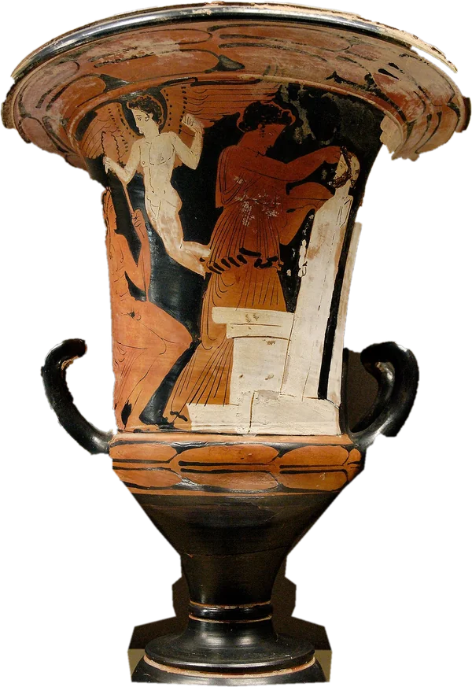
Prawa człowieka w demokracji cyfrowej
Neurodane, sztuczna inteligencja i nowe granice prawa do prywatności
dr Karol Kasprowicz, WPiA UMCS
E przejdź się po mapie
Powitanie: ELSA, 60 minut wykładu, pytania osobno. Przedstaw się jednym zdaniem.
Zapowiedź formy: pójdziemy pieszo przez Ateny, od portu do Areopagu. Na każdym przystanku jedno zdanie historii i od razu współczesność. O tym, skąd ta forma, powiem na ostatnim ekranie.
Przed startem: włącz zegar (T) i sprawdź, czy ankiety na platformie działają. Licznik kamyków powinien pokazywać 0, a slajdy głosowań nie powinny mieć wykresów (Shift+Backspace dwa razy zeruje licznik i wyniki).
Przejście: ruszamy z portu.
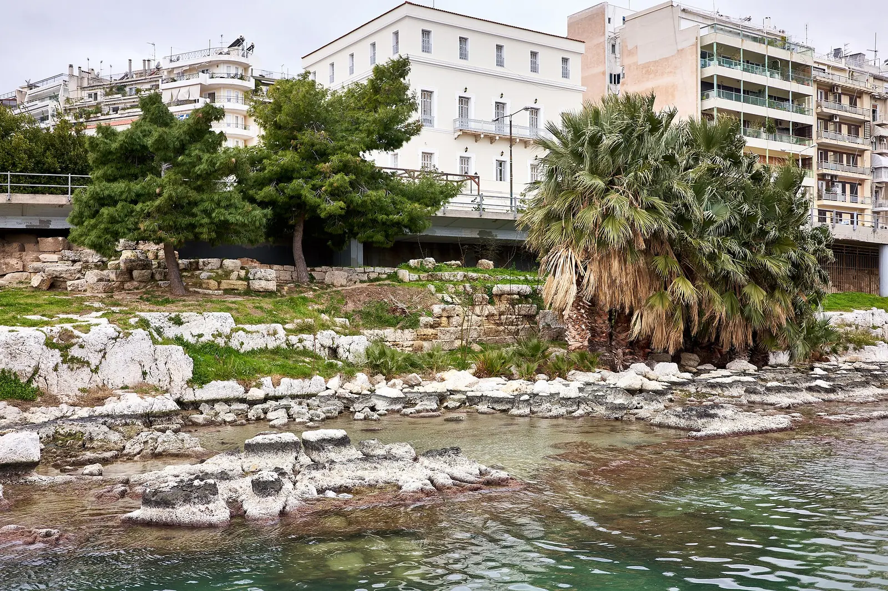
- Idziemy przez Ateny na Areopag.
- Po drodze są pytania: na wykładzie głosowali słuchacze.
- Każdy głos to kamyk w liczniku.
Powiedz (30 s): zasady są na ekranie; głosujemy ankietą platformy, telefonem albo literą na czacie. Pireus był portem Aten (Tukidydes 1.93.3). Mapa nie jest wierna topografii: Pireus i Laurion leżą dalej, tu są na krawędziach.
Przejście: do portu przychodzi wiadomość z Nepalu.
Nepal, wrzesień 2025
- Protesty młodych. Rząd upada, parlament płonie.
- Ruch protestu organizuje debatę i ankietę na Discordzie.
- Blisko połowa głosów: Sushila Karki, była prezes Sądu Najwyższego.
- 12 września 2025 obejmuje urząd premier, powołana przez prezydenta.
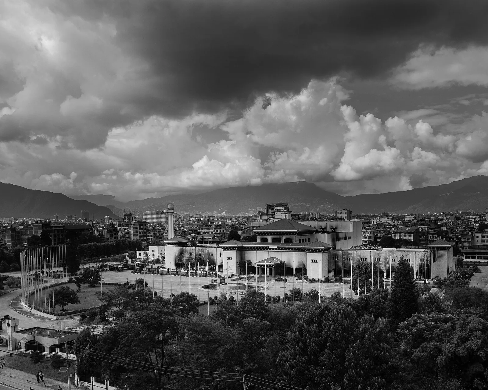
Flaga z czaszką w słomkowym kapeluszu z mangi „One Piece”: Indonezja, Nepal, potem Peru, Maroko, Madagaskar. zdjęcie flagi: CNN ↗
Śledztwo w sprawie użycia siły. „Violence is not the answer” (V. Türk).
Na ekranie zdjęcie budynku parlamentu po pożarze (zdjęcie z 20.09.2025). Opowiedz po kolei, punkt po punkcie. Czwarte kliknięcie: pasek z udziałem głosów (Karki złoto, reszta fiolet, kreska na połowie); piąte: powołanie przez prezydenta. To nie były „wybory na Discordzie”: wskazała ją ankieta, a powołał prezydent.
Liczby tylko z przypisem (stopka): według Kathmandu Post (29.09.2025) oddano 7 713 głosów, a Karki dostała 3 833, czyli blisko połowę. Ten sam dziennik 14.09.2025 podał 3 832 z 7 711; różnica 1–2 głosów.
Organizator: według Al Jazeery debatę i ankietę zorganizowała Hami Nepal, grupa pokolenia Z stojąca za protestem (kanał „Youth Against Corruption”). Al Jazeera potwierdza przebieg, liczb głosów nie podaje.
Powołanie: według Himalayan Times 12.09.2025 prezydent Ram Chandra Paudel powołał Karki, korzystając z uprawnień głowy państwa, i odebrał od niej przysięgę.
Uczestnicy cytowani przez Kathmandu Post sami ostrzegali: „It shouldn't be celebrated as if we elected a prime minister through Discord”.
Kliknięcie 6, flaga (jedno zdanie): czaszka w słomkowym kapeluszu z mangi „One Piece”; w Nepalu w protestach od 8.09.2025, wcześniej w Indonezji (sierpień 2025), potem m.in. na Filipinach, w Peru, Maroku i na Madagaskarze. Dla protestujących znaczy wolność i opór wobec niesprawiedliwości (Straits Times/ANN 12.09.2025, NBC News 15.10.2025). Zdjęcie flagi na bramie płonącego Singha Durbar: w artykule CNN (odnośnik na karcie).
Kliknięcie 7, ONZ: 8.09 Biuro Praw Człowieka wezwało do szybkiego i przejrzystego śledztwa w sprawie użycia siły i do ponownego rozważenia ograniczeń mediów społecznościowych; 9.09 Wysoki Komisarz Volker Türk: „Violence is not the answer”, wezwanie do bezstronnego śledztwa (i apel do protestujących, by unikali przemocy).
Liczb nie podawaj jako pewnych: blokada „ponad 20 platform” (ONZ; 26 tylko w prasie), ofiar „dziesiątki” (Al Jazeera 16.09.2025: ponad 70; 76 niepotwierdzone).
Źródła prasowe (Kathmandu Post, Al Jazeera, Himalayan Times): przy wydarzeniach bieżących to wystarcza.
Przejście: teraz Wasz pierwszy kamyk. (Zastrzeżenia: ankieta nieformalna, nikt nie sprawdzał, kto głosuje; slajd w dodatku.)
Czy Nepal to przykład nowych sposobów partycypacji, typowych dla „demokracji cyfrowej”?
- ATak
- BNie
- CTo była konsultacja, a nie wybór
Na wykładzie głosowali słuchacze. Zastanów się, co byś wybrał(a).
Daj 30–45 sekund. Odczytaj wynik na głos i zapisz go: wraca na końcu, na Zejściu (głosowanie 9).
Nie rozstrzygaj teraz, kto ma rację. Jeśli ktoś pisze na czacie argument, przeczytaj jeden.
Przejście: żeby odpowiedzieć, idziemy tam, gdzie to słowo wymyślono.
Jedno zdanie historii: Agora to plac, na którym toczyło się życie publiczne Aten. Pewne ze źródła: według Plutarcha (Arystydes 7.4) skorupki w ostracyzmie składano w ogrodzonym miejscu na agorze.
Zapowiedź: na Agorze zbudujemy definicję, której będę używać do końca wykładu. Wyjdziemy stąd z tabliczką.
Czym jest demokracja cyfrowa?
Daj minutę. Jeśli platforma nie ma chmury słów, przeczytaj na głos pięć, sześć słów z czatu.
Od razu sortuj je w głowie na trzy grupy, które zaraz pokażę: narzędzia (np. e-głosowanie, aplikacja), areny (np. media społecznościowe, forum) i warunki (np. dezinformacja, uwaga). Zapamiętaj, której grupy było najmniej.
Kamyki: jeśli chcesz liczyć także chmurę, wpisz liczbę odpowiedzi (Shift+P).
Przejście: zanim zdefiniujemy demokrację cyfrową, sprawdźmy, jak Ateńczycy definiowali samą demokrację.
Większość, a nie nieliczni
Ustrój nazywa się demokracją, bo opiera się na większości, a nie na nielicznych.
Parafraza, Tukidydes 2.37.1.
płci męskiej
Powiedz (30 s): Perykles u Tukidydesa (2.37.1): ustrój nazywa się demokracją, bo opiera się na większości. Ale „większość” to tylko dorośli obywatele płci męskiej. Każda demokracja ma regułę, kto się liczy; cyfrowa zapisuje ją w regulaminie platformy.
Źródła: parafraza greki (δημοκρατία κέκληται, ἐς πλείονας; u Crawleya „the many”); obywatelstwo z obojga rodziców-obywateli (Ustrój polityczny Aten 26.4), metojkowie i niewolnicy jako osobne kategorie (57.3); wykluczenie kobiet to wniosek z całokształtu źródeł, nie cytat. Polskiego przekładu nie cytuję, liczb nie podaję.
Przejście: rozłóżmy demokrację cyfrową na warstwy.
Trzy warstwy
Cztery kliknięcia: 1 narzędzia (pas na dole, pasek Estonii z kreską na połowie), 2 areny, 3 warunki (pas na górze), 4 cała kolumna „Prawo” naraz i podświetlenie warunków.
Odsłaniaj po wierszu. Narzędzia: w Atenach losowanie sędziów, które opisuje Arystoteles (Ustrój polityczny Aten 63–64; opis dotyczy jego czasów, IV w.). Nie pokazuj maszyny do losowania jako urządzenia z czasów Peryklesa: zachowane egzemplarze są późniejsze. Dziś: Estonia, gdzie w wyborach parlamentarnych 2023 r. 51,1% głosujących oddało głos przez internet. Polska: petycje, konsultacje, budżety obywatelskie online.
Areny: Agora i Pnyks były przestrzenią publiczną w sensie dosłownym. Dziś vTaiwan (od 2014) i Pol.is, jedno z jego narzędzi; Decidim w Barcelonie (od początku 2016 platforma rady miejskiej decidim.barcelona; samo oprogramowanie Decidim od 2017); Discord w Nepalu. Różnica: dzisiejsze areny mają właściciela, który ustala reguły.
Warunki: to, co musi być prawdą o obywatelu, żeby jego głos coś znaczył. Znak zapytania w kolumnie „Ateny” jest celowy: na to pytanie odpowie Więzienie Sokratesa.
Ostatnie kliknięcie: kolumna „Prawo”. Każda warstwa ma swoje prawo; trzeciej odpowiada wolność myśli.
Przejście: definicje urzędowe nie mówią o warunkach (slajd w dodatku), więc proponuję definicję roboczą.
Demokracja cyfrowa to demokracja, w której formowanie, wyrażanie i zliczanie woli obywateli odbywa się w infrastrukturze cyfrowej, a więc zależy od tego, kto tę infrastrukturę projektuje i kontroluje.
To jest punkt, na którym najbardziej mi zależy. Przeczytaj powoli.
Trzy kliknięcia: każde podkreśla jeden czasownik w definicji i łączy go z warstwą ze slajdu 8 (te same kolory): formowanie → warunki, wyrażanie → areny, zliczanie → narzędzia.
Trzy czasowniki odpowiadają trzem warstwom, w odwrotnej kolejności: zliczanie to narzędzia, wyrażanie to areny, formowanie to warunki. Najwięcej uwagi prawa dostało zliczanie, najmniej formowanie.
Druga połowa zdania jest ważniejsza od pierwszej: „zależy od tego, kto projektuje i kontroluje”. To jest pytanie o władzę, a nie o technikę.
To definicja wykładu, nie definicja z aktu prawnego.
Przejście: z tej definicji wynika teza całego wykładu.
Demokracja cyfrowa to nie demokracja z dodatkiem internetu. To ustrój, w którym wola obywateli powstaje i jest zliczana w infrastrukturze należącej do kogoś innego. Dlatego jej warunkiem jest wolność myśli w sferze wewnętrznej: prawo, którego nie wolno ograniczać, i zarazem takie, o którym sądy prawie nie miały okazji orzekać. Ateny skazały Sokratesa za to, co mówił. Neurotechnologia po raz pierwszy pozwala sięgnąć po to, czego człowiek nie powiedział.
Teza w trzech krokach (trzy kliknięcia). Powiedz wprost: to moje stanowisko, a nie stan prawny. Do końca wykładu będziecie mogli je odrzucić, i o to chodzi w kamykach.
Zdanie o sądach to zapowiedź przystanku V: przepis jest, orzeczeń o neurotechnologii nie znalazłem.
Przy wyjściu z Agory na mapie pojawi się w pasku na dole tabliczka z definicją: pierwsza z trzech rzeczy, z którymi wychodzicie.
Przejście: idziemy na wzgórze, gdzie Ateńczycy głosowali.
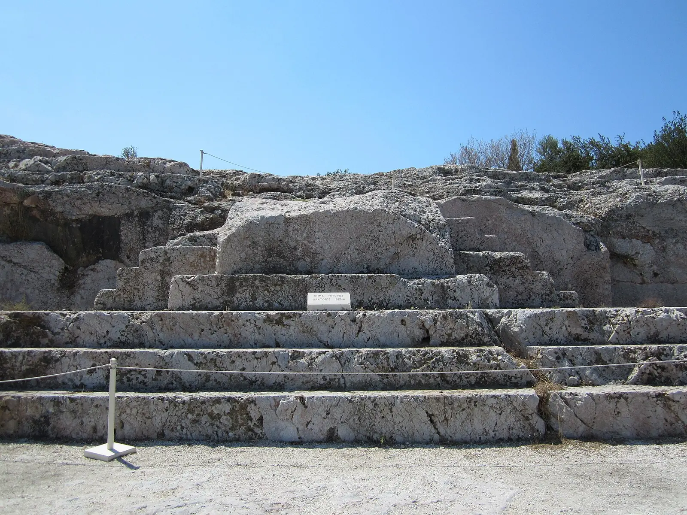
W drodze w pasku pojawia się tabliczka z definicją.
Jedno zdanie historii: Pnyks to wzgórze, na którym zwykle obradowało Zgromadzenie. Tukidydes (8.97.1) pisze, że po obaleniu Czterystu zwołano zgromadzenie na Pnyks, „gdzie i przedtem zwykle się zbierali” (przekład roboczy). Mów „zwykle”, nie „zawsze”.
Głosowanie na Zgromadzeniu źródła nazywają χειροτονία (Ksenofont, Hellenika 1.7.34; Ustrój polityczny Aten 34.1, 43.5). Potwierdzony jest termin, nie opis gestu.
Przejście: na Pnyksie zagłosujemy nad dylematem, dwa razy.
Autonomiczny samochód traci hamulce. Jeśli pojedzie prosto, zginą trzy osoby, które weszły na jezdnię na czerwonym świetle. Jeśli skręci w betonową barierę, zginie jego jedyny pasażer.
Co ma zrobić samochód?
- AJechać prosto
- BSkręcić w barierę
Na wykładzie głosowali słuchacze. Zastanów się, co byś wybrał(a).
Dylemat w stylu eksperymentu Moral Machine, opisany własnymi słowami. 30 sekund na głos. Nie komentuj wyniku.
Przejście: ten sam dylemat, opowiem go jeszcze raz.
Ten sam samochód, te same osoby. Program może ocalić pasażera, który niczego nie złamał, albo trzy osoby, które przechodziły na czerwonym.
Kogo ma ocalić?
- APasażera
- BTrzy osoby na jezdni
Litery znaczą to samo co w wersji 1: A, samochód jedzie prosto; B, skręca. Zastanów się, co byś wybrał(a).
Ten sam stan faktyczny. Zmieniłem dwie rzeczy: zamiast „kto zginie” mówię „kogo ocalić” i podkreślam, że pasażer niczego nie złamał.
Pokaż oba wyniki obok siebie: po wpisaniu wykres pokaże przy każdej literze cieńszy słupek „wersja 1” (jeśli wynik ze slajdu 12 jest wpisany). Jeśli się różnią: o wyniku współdecydował autor pytania. Jeśli się nie różnią, powiedz to wprost: ta sala okazała się odporna na to sformułowanie, i to też jest wynik.
Przejście: wynik zależy też od tego, kto ułożył pytanie (Moral Machine i ostraka Temistoklesa są w dodatku, R4 i R5). Skoro gotowe pytanie zmienia głos, to co zrobi ktoś, kto wie o Tobie więcej niż Ty? Schodzimy do kopalni.
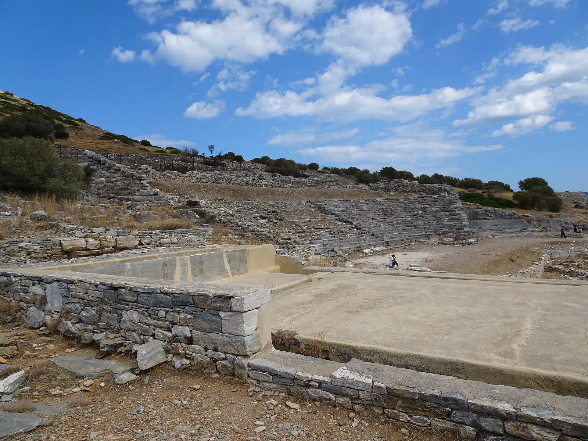
Powiedz (30 s): najdłuższy marsz, poza mury. Według Herodota (7.144) Temistokles namówił Ateńczyków, by dochód z kopalń w Laurionie przeznaczyli na okręty, zamiast dzielić go między obywateli. Surowiec, którego właściciel decyduje o sile państwa.
Uwaga: „srebro opłaciło flotę” to uproszczenie; Herodot pisze o pieniądzach i dwustu okrętach, Arystoteles (Ustrój 22.7) o stu trierach i kopalniach w Maronei.
Przejście: dzisiejszy surowiec to wiedza o ludziach.
Z polubień do poglądów
Dane do 87 milionów użytkowników Facebooka. Federalna Komisja Handlu: 5 mld dolarów kary dla Facebooka (24.07.2019).
Skuteczność samego targetowania psychologicznego jest sporna.
Kliknięcia 1–3: polubienia, model, przewidywanie (strzałki dorastają); 4: wskaźnik AUC 0,85 dla rozróżnienia demokrata czy republikanin (0,5 to zgadywanie, 1,0 bezbłędnie); 5: Cambridge Analytica; 6: sporna skuteczność.
Kosinski i współautorzy (PNAS 2013): z polubień, na próbie ponad 58 tysięcy osób, dało się przewidywać m.in. poglądy polityczne. Wniosek: zachowanie mówi o nas więcej, niż sami mówimy.
Cambridge Analytica: dane do 87 milionów użytkowników, kara FTC 5 mld dolarów z 24.07.2019.
Potwierdzone: Facebook (4.04.2018) pisze o danych „up to 87 million people”; FTC (24.07.2019): kara 5 mld USD za naruszenie nakazu FTC z 2012 r. Kara dotyczyła naruszenia nakazu z 2012 r., nie wprost Cambridge Analytica.
Ostatnie kliknięcie jest ważne: to, czy targetowanie psychologiczne działało, jest sporne. Nie straszę skutecznością, pokazuję kierunek.
Przejście: jak odpowiedziało prawo?
Odpowiedź prawa
- 27.10.2022DSA w Dzienniku Urzędowym
- 20.03.2024rozporządzenie 2024/900 o reklamie politycznej w Dzienniku Urzędowym
- 6.10.2025Meta: koniec reklam politycznych w Unii, powołuje to rozporządzenie
- 10.10.20252024/900 stosowane
- DSA: interfejsy wprowadzające w błąd (art. 25 ust. 1), reklama profilowana na danych wrażliwych (art. 26 ust. 3), ryzyko dla dyskursu obywatelskiego (art. 34 ust. 1 lit. c, bardzo duże platformy).
Rozporządzenie 2024/900 stosowane od 10.10.2025 (art. 30 ust. 2). Meta w komunikacie powołuje „unworkable requirements and legal uncertainties introduced by the EU's Transparency and Targeting of Political Advertising (TTPA) regulation”. Aktualizacja z 6.10.2025: od tego dnia reklamy polityczne, wyborcze i dotyczące spraw społecznych nie są w UE wyświetlane. Komunikat podaje nazwę rozporządzenia, bez numeru 2024/900; to uzasadnienie firmy, nie ustalenie przyczyny.
DSA, rozporządzenie (UE) 2022/2065: art. 25 ust. 1 (interfejsy, które wprowadzają w błąd lub manipulują; samo określenie „zwodnicze interfejsy” pochodzi z motywu 67), art. 26 ust. 3 (zakaz reklamy profilowanej na danych z art. 9 ust. 1 RODO), art. 34 ust. 1 lit. c (ryzyko dla dyskursu obywatelskiego i procesów wyborczych; dotyczy tylko bardzo dużych platform i wyszukiwarek).
Przejście: to wszystko dotyczy zachowania. Teraz krok bliżej ciała.
Od implantu do nadgarstka
Trzy kroki od medycyny do konsumenta: implant, opaska na nadgarstek, protokół w systemie operacyjnym dla zewnętrznych urządzeń BCI.
Neuralink (blog firmy, 12.04.2024): „In January, we conducted the first human implantation of our brain-computer interface (BCI).” Dokładnego dnia firma nie podaje.
Meta: Kaifosh, Reardon i CTRL-labs at Reality Labs, Nature 645, s. 702–711, 23.07.2025: opaska na nadgarstek odczytuje elektromiografię powierzchniową (sEMG), czyli sygnał mięśniowy. Uwaga: Szoszkiewicz i Yuste (EMBO Reports 2025, s. 3470) zaliczają takie sygnały do danych neuronalnych.
Apple (newsroom, 13.05.2025): nowy protokół dla funkcji dostępności Switch Control, w iOS, iPadOS i visionOS, przez który zewnętrzne urządzenia BCI sterują sprzętem Apple; dokumentacja jest dla producentów sprzętu BCI. Apple nie czyta mózgu; otworzyło system na urządzenia BCI osób z niepełnosprawnościami.
Przejście: zanim się przestraszymy, hamulec.
Czego obraz mózgu nie mówi
Przygotowanie ruchu w mózgu zaczyna się przed poczuciem zamiaru.
Nie wynika z tego, że świadome racje nie mają znaczenia.
- Morse · 2006: „syndrom przeceniania mózgu”: obraz mózgu nie rozstrzyga pytań prawnych.
- Martwy łosoś · 2009: fMRI pokazał „aktywność” martwej ryby bez poprawki statystycznej.
Kliknięcia: 1 pasek typu I (ok. 800 ms przed zgłoszonym zamiarem), 2 typ II (ok. 350 ms, minimum ok. 150), 3 Morse, 4 martwy łosoś. Oś liczy czas od zgłoszonego zamiaru (W), bo tak podaje streszczenie; ruch jest później, bez liczby.
Libet w jednym zdaniu: aktywność mózgu wyprzedzała zgłaszany zamiar ruchu. Liczby ostrożnie: próba to 5 osób; ok. 350 ms to średnia w jednej z serii (potencjał gotowości typu II), w seriach typu I było ok. 800 ms. Autorzy piszą w streszczeniu o „constraints” (ograniczeniach) dla świadomego zapoczątkowania i kontroli działań, nie o końcu wolnej woli. Oś odpowiedzialności karnej wraca w części V, po sprawie z Como (slajdy 30–31).
Morse: przyczyna to nie wymówka; prawo nie potrzebuje metafizyki, tylko minimalnej racjonalności. Martwy łosoś (Bennett i in.; plakat 2009, artykuł 2010): przypomnienie o korekcie na wielokrotne porównania, a nie kpina z fMRI.
Źródła (dane potwierdzone w pobranych tekstach): Libet, Gleason, Wright, Pearl, „Brain” 1983, t. 106, s. 623–642; Morse, „Ohio State Journal of Criminal Law” 2006, t. 3, s. 397–412; Bennett, Baird, Miller, Wolford, „Journal of Serendipitous and Unexpected Results”, t. 1, nr 1, s. 1–5.
Przejście: zanim pokażę, co czytają urządzenia, jeden film.
Test Voighta-Kampffa
Blade Runner, reż. Ridley Scott. Test nie czyta myśli.
Dziś tak działa neurotechnologia konsumencka: stany, nie treść.
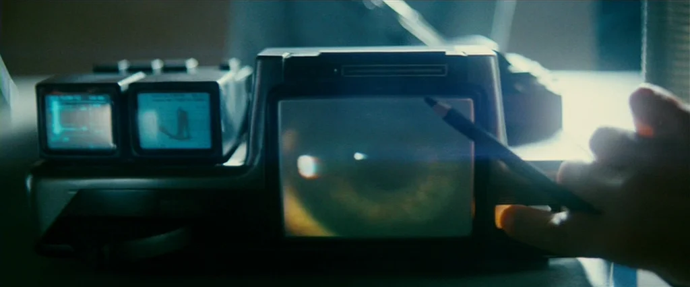
W filmie Ridleya Scotta (1982) test Voighta-Kampffa nie odczytuje myśli. Badający zadaje pytania i patrzy na mimowolne reakcje ciała, źrenicę i rumieniec, a z nich wnioskuje o empatii.
To jest dokładnie to, co robi dziś neurotechnologia konsumencka: mierzy stany ciała i mózgu, nie treść myśli, i z nich wyciąga wnioski.
Jedno zdanie wystarczy; film jest mostem, nie tematem.
Przejście: co więc naprawdę czytają dzisiejsze urządzenia?
Opaska nie czyta myśli
Urządzenia konsumenckie nie czytają treści myśli. Producenci deklarują odczyt stanów:
Perswazja nie potrzebuje treści myśli. Wystarczy jej chwila, w której odbiorca jest podatny.
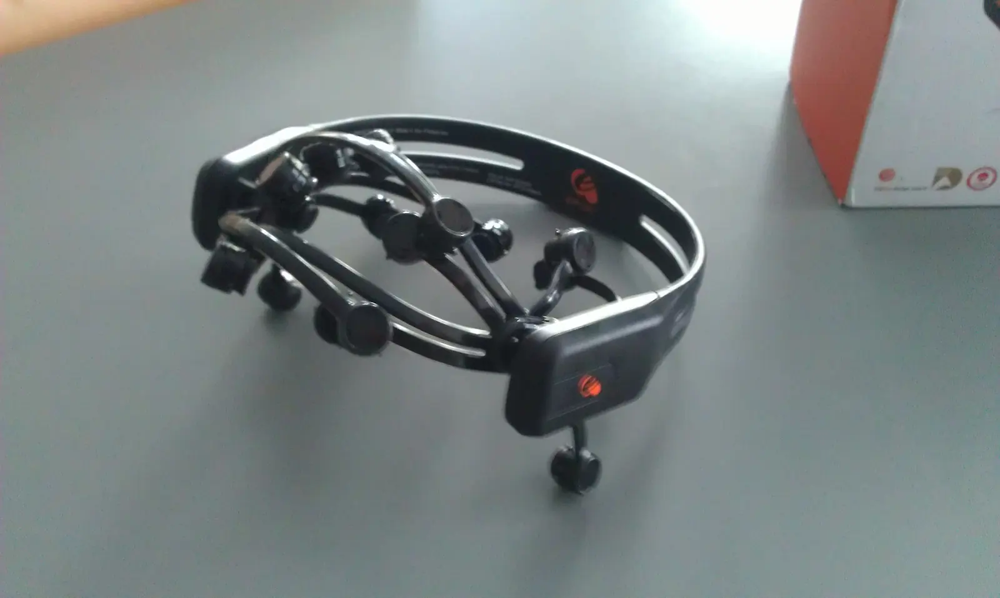
To jest zdanie przeciw straszeniu: nikt dziś nie czyta Waszych myśli opaską. Producenci deklarują odczyt stanów.
Deklaracje producentów: Neurable („track focus, prevent fatigue”; słuchawki Neurable One pokazują m.in. „Focus”), Muse (wykrywa, czy umysł jest „calm or active”, i kiedy odpływa uwaga). Słowa „pobudzenie” producenci nie używają. Dla Emotiv nie mam deklaracji skupienia ani zmęczenia, więc go nie przywołuję.
Teza, podana jako teza: do perswazji nie trzeba wiedzieć, co myślisz. Wystarczy wiedzieć, kiedy jesteś zmęczony albo rozkojarzony. Wraca w kazusie 8b (dodatek).
Przejście: pytanie do Was, osobiste.
Czy założysz opaskę mierzącą skupienie, jeśli da 20% zniżki na ubezpieczenie albo pomoże w nauce do egzaminu?
- ATak, dla zniżki
- BTak, do nauki
- CTak, w obu przypadkach
- DNie
Na wykładzie głosowali słuchacze. Zastanów się, co byś wybrał(a).
30 sekund. Zobaczmy, ile osób zgodziłoby się dobrowolnie.
Dla uważnych: sala od pół godziny oddaje dane o swoich preferencjach moralnych narzędziu do głosowań. Kto przeczytał jego regulamin?
Przejście: jakie prawo chroni to, co taka opaska odczyta? Odpowiedź leży w celi.
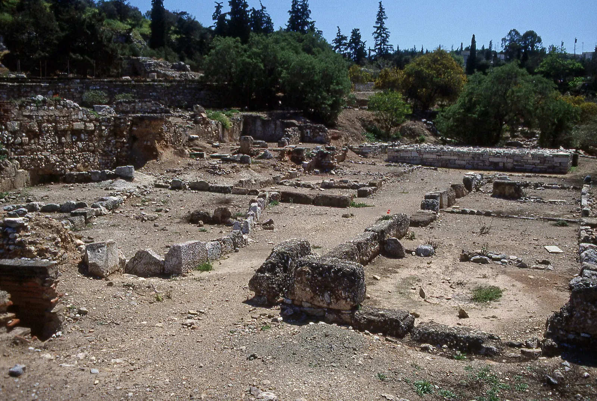
Powiedz (30 s): wracamy do miasta. Ten budynek przy Agorze bywa nazywany więzieniem Sokratesa, ale to hipoteza: archiwum wykopalisk ASCSA pisze „possibly the State Prison”. Stąd wyjdziemy z mapą przepisów.
Uwaga: nie mylić z tzw. więzieniem Sokratesa na wzgórzu Filopapposa; o celi Sokratesa nic nie wiadomo.
Przejście: to rdzeń dogmatyczny wykładu. Stąd wychodzimy z mapą przepisów.
Rok 399 p.n.e.
- Zarzuty: nie uznaje bogów miasta, wprowadza nowe bóstwa, psuje młodzież.
- Platon każe mu powiedzieć: wystarczyłoby trzydzieści głosów w drugą stronę.
- Sądził go sąd ludowy, a nie Areopag.
Czyli to, co głosił i jak mówił o bogach. Do tego, co pomyślał, miasto nie miało dostępu.
Tę granicę prawo nazywa forum internum.
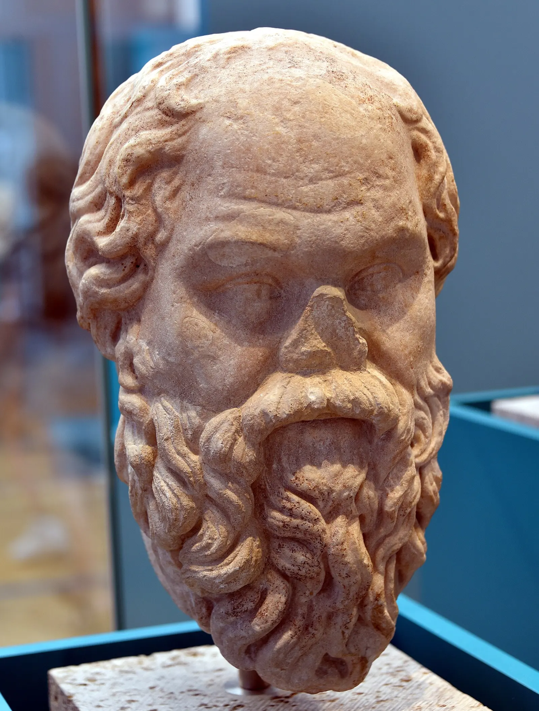
Zarzuty zgodnie u Platona (Obrona 24b–c), Ksenofonta (Wspomnienia 1.1.1) i Diogenesa Laertiosa (2.40): nie uznaje bogów, których uznaje miasto, wprowadza nowe bóstwa, psuje młodzież. Greckie νομίζειν to „uznawać” albo „wierzyć”, więc zarzut dotyczył też przekonań i praktyk kultowych. Uproszczenie „ukarany tylko za to, co powiedział” jest więc nieścisłe.
Trzydzieści głosów: Platon, Obrona 36a (paginacja Stephanusa): gdyby tylko trzydzieści głosów padło inaczej, zostałby uniewinniony. Liczby 281 u Diogenesa Laertiosa (2.41) nie używaj: źródło późne, zdanie dwuznaczne.
Powiedz wprost, że sądził go sąd ludowy, a nie Areopag: Sokrates zwraca się do sędziów ludowych (ἄνδρες δικασταί, Obrona 40a), a Areopag w tych tekstach nie pada. Na mapie oba miejsca są blisko i łatwo je pomylić. Rok 399: Diogenes Laertios 2.44 (pierwszy rok 95. olimpiady; datowanie konwencjonalne).
Punkt zwrotny wykładu: Ateny sądziły to, co Sokrates głosił i jak postępował; do jego myśli nie miały dostępu. Neurotechnologia jest pierwszą techniką, która obiecuje dostęp do tego, co przed słowem.
Przejście: zanim pokażę przepisy, quiz.
Które z tych praw nie może być ograniczone nigdy, nawet ustawą?
- APrywatność
- BWolność słowa
- CWolność myśli w sferze wewnętrznej
- DWolność zgromadzeń
Na wykładzie głosowali słuchacze. Zastanów się, co byś wybrał(a).
30 sekund. Poprawna odpowiedź: C.
Przejście: dlaczego C? Art. 9 EKPC.
Myśleć wolno bez wyjątków
ograniczenia ustawą
Myśl, sumienie, wyznanie. Nie podlega ograniczeniom.
Ust. 2: „Wolność uzewnętrzniania wyznania lub przekonań może podlegać jedynie takim ograniczeniom…”
Tak samo: art. 18 MPPOiP. Karta: art. 10 ust. 1, przez art. 52 ust. 3. Obok: art. 3 ust. 1 Karty, integralność psychiczna.
„Absolute and unconditional”: Przewodnik Kancelarii ETPC po art. 9, pkt 27 (nie wiąże Trybunału). Podobnie bez wyjątków: zakaz tortur i niewolnictwa.
Na starcie widać tylko złoty krąg wewnętrzny. Kliknięcia: 1 krąg zewnętrzny i ust. 2, 2 Pakt i Karta, 3 Przewodnik.
Powiedz: art. 9 ust. 1 EKPC chroni wolność myśli, sumienia i wyznania; ust. 2 pozwala ograniczać tylko uzewnętrznianie. Sfera wewnętrzna ograniczeniom nie podlega. Tak samo art. 18 Paktu (art. 4 ust. 2 nie pozwala go zawiesić) i Karta, przez art. 52 ust. 3. Przewodnik Kancelarii ETPC, pkt 27: „absolute and unconditional”.
Trybunał nie orzekł wprost, że to prawo absolutne: słowa „absolute” w wyrokach nie ma; tak ujmuje to Przewodnik Kancelarii, pkt 27, powołując się na Ivanova § 79 (dokument nie wiąże Trybunału). Logikę ust. 2 daje Kokkinakis § 33, nie § 31. Z orzecznictwa: państwo nie może dyktować, w co człowiek wierzy (Ivanova § 79; Nolan i K. § 73). Art. 19 Paktu dotyczy „poglądów” i art. 4 ust. 2 go nie wymienia. Karta, art. 3 ust. 1: integralność psychiczna. Absolutne są też np. zakaz tortur i niewolnictwa.
Przejście: a polska Konstytucja?
Konstytucja nie wymienia wolności myśli
„Każdemu zapewnia się wolność sumienia i religii.”
Opaskę sprzedaje jednak spółka, nie władza.
Polska ciekawostka: art. 53 ust. 1 mówi o wolności sumienia i religii. W art. 53 ust. 1 słowa „myśl” nie ma. Brak słowa nie oznacza braku ochrony: trzeba dopowiedzieć, skąd doktryna ją wyprowadza.
Ust. 7 chroni przed obowiązkiem ujawnienia światopoglądu, ale tylko wobec organów władzy publicznej. Art. 51 ust. 1: nikt nie może być obowiązany inaczej niż na podstawie ustawy do ujawniania informacji dotyczących jego osoby. Art. 47: ochrona życia prywatnego i decydowanie o swoim życiu osobistym.
Brzmienie art. 30, 47, 51 ust. 1 i 53 sprawdzone w Dz.U. 1997 nr 78 poz. 483 (api.sejm.gov.pl).
Przejście: co właściwie to prawo zawiera?
Cztery możliwe atrybuty wolności myśli
Nie być zmuszanym do ujawniania myśli.
Brak kary za myśli, także domniemane.
Brak niedopuszczalnej zmiany myśli.
Państwa sprzyjają warunkom wolności myśli (zakres sporny).
Ahmed Shaheed, Specjalny Sprawozdawca ONZ ds. wolności religii lub przekonań, 5.10.2021.
- 2021A/76/380: wolność myśli
- 6.10.2022Rada Praw Człowieka, rezolucja 51/3
- 2024A/HRC/57/61, Komitet Doradczy
- 2025A/HRC/58/58, prywatność i neurodane
- 5.11.2025UNESCO, rekomendacja (Samarkanda)
Raport A/76/380 z 5.10.2021: Ahmed Shaheed, Specjalny Sprawozdawca ONZ ds. wolności religii lub przekonań. W pkt 25 Sprawozdawca „maps four possible attributes” tego prawa na podstawie orzecznictwa i doktryny. To możliwe atrybuty, nie ustalona treść prawa: mów „możliwe”.
Trzeci atrybut obejmuje przymus, modyfikację i manipulację (pkt 28–39). Czwarty to nie prawo jednostki, tylko „States fostering an enabling environment for freedom of thought”; raport sam zastrzega, że „it is uncertain what this would entail” (pkt 40), a część autorów nie uważa tego za obowiązek prawny (pkt 41).
Most do definicji z Agory (warunki to trzecia warstwa demokracji cyfrowej) to teza wykładu, nie raportu. Raport tylko postuluje czwarty atrybut jako jedną z możliwości.
Neurotechnologia: pkt 76–79 raportu; pkt 79: „contemporary legal frameworks are unprepared for emerging predictive and neurotechnologies”.
Ostatnie kliknięcie: oś czasu ONZ. Rezolucja Rady Praw Człowieka 51/3 „Neurotechnology and human rights” (6.10.2022); raport Komitetu Doradczego A/HRC/57/61 (57. sesja, 2024); raport Specjalnej Sprawozdawczyni ds. prywatności A/HRC/58/58 (58. sesja, 2025): neurodane jako dane szczególnie wrażliwe, prywatność mentalna; UNESCO: rekomendacja w sprawie etyki neurotechnologii, komunikat z 5.11.2025 (Konferencja Generalna w Samarkandzie).
Przejście: a co orzekł Strasburg? (Polski zalążek, art. 171 § 5 KPK, jest w dodatku.)
Strasburg waży. Tu ważyć nie wolno
Wszystkie dotyczą praw, które wolno ważyć. Jeśli sygnał z mózgu podpada pod sferę wewnętrzną z art. 9, ważyć nie wolno.
Wyroku Trybunału o neurotechnologii nie znalazłem.
Kliknięcia: 1 waga się przechyla (sprawy z art. 8 i 10 ważone z celem ingerencji), 2 obok spada odważnik art. 9 z kłódką: tego nie kładzie się na wagę; 3 „nie znalazłem”.
Kontrast z inwigilacją: Big Brother Watch (25.05.2021), Glukhin (4.07.2023), Podchasov (13.02.2024). Wszystkie o prawach, które wolno ważyć. Dlatego kwalifikacja ma znaczenie praktyczne: art. 8 to test proporcjonalności, sfera wewnętrzna z art. 9 to zakaz.
Niuans Big Brother Watch i in. przeciwko Zjednoczonemu Królestwu (Wielka Izba, trzy połączone skargi: 58170/13, 62322/14, 24960/15): naruszenie art. 8 co do reżimu s. 8(4) i Rozdziału II; naruszenie art. 10 tylko w drugiej z połączonych spraw (materiał dziennikarski); co do pozyskiwania danych od obcych służb brak naruszenia art. 8 i 10 (12 do 5). Trybunał nie uznał więc wszystkich praktyk za naruszenie. Glukhin przeciwko Rosji (11519/20): art. 8 i 10. Podchasov przeciwko Rosji (33696/19): art. 8.
Paradoks: kwerenda nie znalazła wyroku Trybunału o neurotechnologii. Mów „nie znalazłem (HUDOC, listopad 2026)”, nie „nie ma”. Zapytania w HUDOC: „brain-computer interface”, „neurotechnology”, „neurotechnologies”, „neurotechnologie”, „mental privacy”, „cognitive liberty”, „neurorights”: zero trafień; szersze zapytania dały tylko sprawy medyczne i więzienne. Zapytanie kontrolne „bulk interception”: 56 trafień, najnowsze z 29.09.2026, więc indeks był aktualny co najmniej do końca września 2026. Przewodnik po art. 9 (5.03.2026) nie zawiera słów „neuro” ani „brain” poza „brainwashing”. Stan na 17.11.2026; jeden nowy wyrok może to zmienić.
W Strasburgu brak spraw o neurotechnologii (stan HUDOC 24.11.2026). Najbliższe tematycznie, ale nie neuro: Chukanski przeciwko Bułgarii (wariograf) i Datashvili przeciwko Gruzji (przymusowe badanie psychiatryczne), obie zakomunikowane.
Przejście: w Strasburgu nic, ale sądy w Europie miały już mózg na sali.
Como 2011: sprawa Albertani
- Czyn26-latka zabiła starszą siostrę (wcześniej przetrzymywaną i zmuszaną do psychotropów), spaliła zwłoki, usiłowała zabić rodziców.
- Spór biegłychbiegły sądu: w pełni poczytalna; biegli obrony (P. Pietrini, G. Sartori): nie.
- Co pokazał mózgVBM: zmiany istoty szarej w przednim zakręcie obręczy i wyspie względem grupy kontrolnej; EEG i MRI; trzy allele, m.in. niskoaktywny MAO-A.
- WyrokGIP Como, sędzia L. Lo Gatto, 20.05.2011: poczytalność częściowo ograniczona (vizio parziale di mente); 20 lat i 3 lata zakładu.
- Czy sąd ocenił czyn, czy mózg?Krytyka: słaby związek tych zmian z agresją; sędzia odrzuciła biegłego sądu.
Do powiedzenia (5 kliknięć): W 2011 r. sąd w Como sądził 26-letnią kobietę, która zabiła starszą siostrę, spaliła jej zwłoki i próbowała zabić rodziców. Biegły sądu uznał ją za w pełni poczytalną, biegli obrony, Pietrini i Sartori, za niepoczytalną. Obrona pokazała obrazy mózgu: badanie VBM wykazało zmiany istoty szarej w przednim zakręcie obręczy i w wyspie w porównaniu z grupą kontrolną, do tego EEG, MRI i trzy niekorzystne allele, m.in. niskoaktywny MAO-A. Sędzia Luisa Lo Gatto uznała poczytalność za częściowo ograniczoną i orzekła 20 lat oraz 3 lata zakładu. Pytanie do Was: czy sąd ocenił czyn, czy mózg? Krytycy wskazują, że związek tych zmian z agresją jest słaby, a sędzia odrzuciła opinię biegłego, którego sama powołała.
Test aIAT i kara pierwotna: niepotwierdzone. Fakty według komentarzy, tekst wyroku niedostępny. Tryb skrócony, GIP (jeden komentarz pisze GUP); sygnatura n. 536/2011 według Rusconi i Mitchener-Nissen.
Na pytania, nie na slajd: Triest, Corte d'Assise d'Appello, 18.09.2009, n. 5 (Bayout): badania genetyczne (m.in. MAO-A) i ocena kliniczna, bez neuroobrazowania; kara z 9 lat 2 miesięcy do 8 lat 2 miesięcy. Kontrapunkt: BGH, 17.12.1998, 1 StR 156/98 (BGHSt 44, 308): dobrowolne badanie wariografem nie narusza godności, ale metoda pytań kontrolnych to dowód „völlig ungeeignet”, całkowicie nieprzydatny. Granica leży w rzetelności nauki.
Jeśli padnie pytanie o USA i Wielką Brytanię: USA, wykrywanie kłamstwa przez fMRI. United States v. Semrau, 693 F.3d 510 (6th Cir., 7.09.2012): fMRI wykluczone, bo nie znano odsetka błędów „in real world settings”, a badanie odbiegało od protokołów (art. 702 FRE); osobno art. 403. Wilson v. Corestaff, 900 N.Y.S.2d 639 (N.Y. Sup. Ct. 2010): fMRI na wiarygodność świadka to odpowiednik wariografu, wykluczone bez rozprawy Frye, o wiarygodności decydują ławnicy. Harrington v. State, 659 N.W.2d 509 (Iowa 2003): skazanie uchylono z powodu zatajenia dowodów (Brady), a nie dzięki „brain fingerprinting”, którego sąd nie oceniał.
USA, mózg przy wymiarze kary, najbliżej Como: Grady Nelson (Miami-Dade 2010): QEEG dopuszczone w fazie karnej, jury nie zarekomendowało śmierci; wpływ znamy z relacji ławników w prasie, nie z uzasadnienia. Brian Dugan (DuPage, Illinois 2009): zeznania K. Kiehla o fMRI i psychopatii dopuszczone, a mimo to jury orzekło śmierć, zamienioną na dożywocie w 2011 r. przy zniesieniu kary śmierci. Morał: w USA ten sam dowód raz pomaga, raz nie, a o wyniku decyduje ława.
Wielka Brytania: nie znaleziono orzeczenia dopuszczającego fMRI lub EEG jako wykrywacz kłamstwa. Przegląd 204 spraw z lat 2005-2012 (Catley i Claydon, J. Law Biosci. 2015) i raport Royal Society „Brain Waves 4” (2011) traktują to jako sprawę przyszłości; neuroobrazowanie pojawia się tam przy ocenie zdolności i stanu zdrowia, nie prawdomówności. Powiedz uczciwie: „w UK nie znam odpowiednika Como”.
Przejście: zanim pójdziemy do Luksemburga, pytanie, które ta sprawa budzi: czy to był jej wybór, czy jej mózg?
Czy mózg decyduje przed nami?
- Libet i in. · 1983ok. 350 msprzed zgłoszonym zamiarem rośnie potencjał gotowości (już go widzieliście)
- Soon, Haynes i in. · 20087–10 swcześniej wzorzec fMRI zdradza, którą ręką ktoś naciśnie; trafność tylko nieco powyżej rzutu monetą
- Schultze-Kraft, Haynes i in. · 2016ok. 200 msprzed ruchem: do tej chwili można go jeszcze zatrzymać („punkt bez powrotu”)
Kliknięcia: 1 Libet (przypomnienie ze slajdu 18), 2 Soon i Haynes 2008, 3 Schultze-Kraft i Haynes 2016, 4 pomost do Como.
Do powiedzenia (ok. 1,5 min): Sprawa z Como budzi pytanie starsze niż rezonans: czy to w ogóle był jej wybór? Libeta już widzieliście: przygotowanie ruchu w mózgu zaczyna się kilkaset milisekund przed tym, jak poczujemy zamiar. W 2008 r. zespół Johna-Dylana Haynesa przewidywał z fMRI, którą ręką badany naciśnie przycisk, 7 sekund przed decyzją, a po uwzględnieniu opóźnienia sygnału nawet do 10 sekund. Ale trafność była tylko nieco lepsza od rzutu monetą, a wybór był banalny: lewa albo prawa. W 2016 r. zespół Haynesa, już w Berlinie, pokazał drugą stronę: ruch można zatrzymać nawet po starcie potencjału gotowości, do około 200 milisekund przed ruchem. Potem już nie: to „punkt bez powrotu”. I teraz prawo. Prawo karne nie musi rozstrzygać sporu o wolną wolę. Pyta, czy sprawca mógł rozpoznać znaczenie czynu i pokierować swoim postępowaniem; tak brzmi art. 31 k.k. W Como sąd nie powiedział, że mózg zdecydował za oskarżoną. Uznał jej poczytalność za częściowo ograniczoną (vizio parziale di mente), co przypomina nasz art. 31 § 2 (analogia, nie tożsamość).
Liczby i źródła. Libet, Gleason, Wright, Pearl, „Brain” 1983, t. 106, nr 3, s. 623–642: potencjał gotowości typu II średnio ok. 350 ms, minimum ok. 150 ms przed zgłoszonym zamiarem W; typ I ok. 800 ms; 5 osób; czasy liczone od W, nie od ruchu (streszczenie). Soon, Brass, Heinze, Haynes, „Nature Neuroscience” 2008, t. 11, nr 5, s. 543–545: informacja w korze czołowobiegunowej (BA10) 7 s przed decyzją, „up to 10 s” po uwzględnieniu opóźnienia sygnału BOLD; wybór lewy albo prawy przycisk (tekst artykułu, A). Trafność: autorzy piszą „high accuracy”, liczby w tekście nie podają; wykresy dla kory czołowobiegunowej i przedklinka mają skalę 50–60% przy poziomie przypadku 50% (odczyt z osi wykresu, B). Schultze-Kraft, Birman, Rusconi, Allefeld, Görgen, Dähne, Blankertz, Haynes, „PNAS” 2016, t. 113, nr 4, s. 1080–1085: zatrzymanie ruchu było możliwe, gdy sygnał stop padł wcześniej niż 200 ms przed początkiem ruchu (streszczenie, A).
Uwaga: 350 ms Libeta liczy się od zgłoszonego zamiaru, 200 ms od początku ruchu, 7–10 s od zgłoszonej decyzji. Nie układaj tych liczb na jednej osi.
Kontrapunkt, na pytania: Schurger, Sitt, Dehaene, „PNAS” 2012, t. 109, nr 42, s. E2904–E2913: narastanie potencjału gotowości może być w dużej części efektem uśredniania spontanicznych wahań aktywności, które przypadkiem przekraczają próg, a nie śladem decyzji podjętej wcześniej (streszczenie, A). Nowsza książka Haynesa: J.-D. Haynes, M. Eckoldt, „Fenster ins Gehirn. Wie unsere Gedanken entstehen und wie man sie lesen kann”, Ullstein, Berlin 2021, 297 s. (dane bibliograficzne z katalogu Deutsche Nationalbibliothek, A; treść o wolnej woli znam tylko z recenzji, C, więc jej nie streszczaj).
Art. 31 § 1 k.k.: „Nie popełnia przestępstwa, kto, z powodu choroby psychicznej, upośledzenia umysłowego lub innego zakłócenia czynności psychicznych, nie mógł w czasie czynu rozpoznać jego znaczenia lub pokierować swoim postępowaniem.” § 2: jeżeli ta zdolność „była w znacznym stopniu ograniczona, sąd może zastosować nadzwyczajne złagodzenie kary” (tekst jedn. Dz.U. 2026 poz. 1342, A).
Przejście: a gdy w mózgu jest coś, co widać na zdjęciu i co można wyciąć? Dwa przypadki z guzem.
Guz w mózgu a odpowiedzialność
Kliknięcia: 1 Whitman, 2 pacjent z 2003 r., 3 pomost do Como.
Do powiedzenia (ok. 1,5 min): 1 sierpnia 1966 r. Charles Whitman zabił żonę i matkę, a potem strzelał z wieży Uniwersytetu Teksasu w Austin. Sekcja wykazała złośliwy guz mózgu, glejaka wielopostaciowego. Gubernator powołał komisję lekarzy i ona napisała ostrożnie: związku guza z tym, co Whitman zrobił, nie da się jasno ustalić, ale guz mógł się przyczynić do tego, że nie panował nad emocjami i działaniem. Drugi przypadek jest czystszy. W 2003 r. neurolodzy z Wirginii opisali 40-latka, u którego nagle pojawiła się pedofilia. Wiedział, że to złe, ukrywał to, a mimo to nie umiał się powstrzymać. Rezonans pokazał guz w okolicy oczodołowo-czołowej. Po operacji objawy ustąpiły; gdy guz odrósł, wróciły. To jest język art. 31: nie tylko „czy wiedział”, ale „czy mógł pokierować swoim postępowaniem”. Porównajcie z Como: tam nie było guza, tylko obraz mózgu porównany statystycznie z grupą kontrolną i allele zwiększonego ryzyka, m.in. MAO-A.
Whitman, źródło pierwotne (A): „Report to the Governor, Medical Aspects, Charles J. Whitman Catastrophe”, Austin, 8.09.1966 (Governor's Committee and Invited Consultants, przewodniczący R. Lee Clark; kopia z Austin History Center). S. 5: zabił żonę i matkę, potem z wieży; „16 dead and 32 wounded”, z jego śmiercią 49. S. 7: rozpoznanie „Glioblastoma multiforme”; fragmenty guza usunięte przez dr. de Chenara „reportedly” z prawej istoty białej skroniowo-potylicznej. S. 6: badanie ograniczone (sekcja ok. 24 godz. po śmierci, ciało zabalsamowane, mózg uszkodzony strzałami, nie wszystkie fragmenty odzyskane). S. 8: brak dowodów klinicznej nieprawidłowości neurologicznej; dotychczasowa wiedza „does not enable us to explain the actions of Whitman on August first”. S. 10–11, wniosek 11: „the relationship between the brain tumor and Charles J. Whitman's actions on the last day of his life cannot be established with clarity. However, the highly malignant brain tumor conceivably could have contributed to his inability to control his emotions and actions.” Wniosek 12: bez świeżej oceny psychiatrycznej diagnozy postawić nie można.
Uwaga, rozbieżność: wersja „guz naciskał na ciało migdałowate” pochodzi od D. Eaglemana („The Brain on Trial”, „The Atlantic”, 2011; źródło wtórne, B): guz średnicy monety, wyrastający spod wzgórza, uciskający podwzgórze i ciało migdałowate. Raport komisji ciała migdałowatego nie wymienia, a miejsce pobrania fragmentów opisuje jako prawą istotę białą skroniowo-potyliczną. List Whitmana z prośbą o sekcję znam tylko z Eaglemana (B); według raportu sekcję zlecił sędzia pokoju J. A. Dellana (s. 5, A). Data: okładka raportu 8.09.1966; jedna relacja prasowa podaje 13.09.
Pacjent z 2003 r.: J. M. Burns, R. H. Swerdlow, „Right Orbitofrontal Tumor With Pedophilia Symptom and Constructional Apraxia Sign”, „Archives of Neurology” 2003, t. 60, nr 3, s. 437–440, doi 10.1001/archneur.60.3.437. Streszczenie (A): nabyta pedofilia przy prawym guzie oczodołowo-czołowym, objawy ustąpiły po resekcji. Przebieg z tekstu artykułu (B, tekst odczytany przez narzędzie, nie z druku): 40-latek; guz (hemangiopericytoma) u podstawy przedniego dołu czaszki, przemieszczający prawy płat oczodołowo-czołowy; resekcja XII 2000; X 2001 ból głowy i powrót potajemnego zbierania pornografii, rezonans: odrost guza; ponowna resekcja II 2002. Artykuł nie mówi wprost, czy po drugiej operacji zachowania seksualne ustąpiły. Wcześniej uznany winnym molestowania dziecka; „could not refrain from acting on his pedophilia despite the awareness that this behavior was inappropriate”.
Przejście: skoro z mózgu da się coś przewidzieć, to czy wolno karać za przewidywanie? Kino.
Raport mniejszości
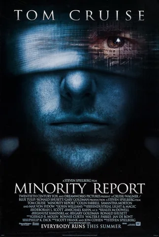
Minority Report, reż. Steven Spielberg, według opowiadania Philipa K. Dicka (1956). Policja aresztuje za zabójstwo, którego jeszcze nie było.
Haynes przewiduje z mózgu proste wybory. A za chwilę TSUE: wniosek o człowieku też jest daną.
Cogitationis poenam nemo patitur.Nikt nie ponosi kary za myśl. Ulpian, Digesta 48.19.18
Kliknięcia: 1 pytanie, 2 łącznik z Haynesem i TSUE, 3 Ulpian.
Do powiedzenia (ok. 1 min): W „Raporcie mniejszości” Spielberga policja aresztuje ludzi za zabójstwa, które dopiero mają popełnić; przewidują je jasnowidze. Pytanie filmu jest dziś mniej fantastyczne: czy wolno karać za czyn przewidziany, zanim nastąpi? Haynes przewidywał z mózgu, którą ręką ktoś naciśnie przycisk, i to tylko trochę lepiej niż rzut monetą. Ale samo przewidywanie jest już informacją o człowieku, a za chwilę zobaczymy, że TSUE chroni także dane wywnioskowane. Rzymianie mieli na to zdanie: Cogitationis poenam nemo patitur, nikt nie ponosi kary za myśl. Ulpian, Digesta 48.19.18.
Źródła. Film: Minority Report, reż. Steven Spielberg, 2002, Twentieth Century Fox i DreamWorks (plakat: „A Steven Spielberg film”, opowiadanie Philipa K. Dicka w napisach; A dla danych z plakatu). Opowiadanie: P. K. Dick, „The Minority Report”, „Fantastic Universe”, styczeń 1956 (B: bibliografie i strony o Dicku, bez wglądu w egzemplarz czasopisma). Opis fabuły (wydział Precrime, jasnowidze) z filmu, bez źródła pisanego (B). Digesta 48.19.18: „Ulpianus 3 ad ed. Cogitationis poenam nemo patitur.” (The Latin Library, tekst Digestów; A dla brzmienia i miejsca, wydanie Mommsena niesprawdzone w druku).
Uwaga: maksyma dotyczy myśli. Przygotowanie jest u nas karalne tylko wtedy, gdy ustawa tak stanowi (art. 16 § 2 k.k., A).
Plakat: prawo cytatu (art. 29 ust. 1 pr. aut.), © Twentieth Century Fox / DreamWorks, pobrany z impawards.com.
Przejście: drugi sąd, w Luksemburgu, mówi o danych, także wywnioskowanych.
Dane wnioskowane
zakaz „obowiązuje niezależnie od tego, czy informacja ujawniona w wyniku danego przetwarzania jest prawdziwa i czy administrator danych działa w celu uzyskania” takich informacji
Sygnał z mózgu, z którego wnioskuje się o stanach, może być daną szczególną, nawet gdy wniosek jest błędny.
Kliknięcia 1–3: schemat z wyroku OT. Litewskie przepisy kazały publikować deklaracje interesów urzędników z danymi partnera; z tego dało się wywnioskować orientację seksualną. TSUE: dane, które „poprzez intelektualną operację kojarzenia lub dedukcji” wskazują na informację wrażliwą, są objęte art. 9 ust. 1 RODO (pkt 120, 123); nie można ich wyłączyć ze wzmocnionej ochrony (pkt 127).
Kliknięcie 4: Meta przeciwko Bundeskartellamt, pkt 69: zakaz działa niezależnie od tego, czy wywnioskowana informacja jest prawdziwa i czy administrator jej szukał; pkt 70: niezależnie od deklarowanego celu.
Kliknięcie 5 to nasz wniosek, wyraźnie jako analogia: żaden z tych wyroków nie mówi o neurotechnologii. Sygnał EEG sam nie jest „poglądem” ani „zdrowiem”, ale wniosek z niego może je ujawniać.
Przejście: przepis jest, ale pusty. Kto ma pomysł, czym go wypełnić? Idziemy do stoi, gdzie Ateńczycy się spierali.
Powiedz (30 s): od tej stoi wzięli nazwę stoicy (Diogenes Laertios 7.5). Tu spór: wypełnić pustkę nowymi prawami czy wykładnią starych? Na początku i na końcu tej części głosujecie.
Na marginesie: trzy głosy są bliżej siebie, niż się wydaje. Fundacja Yustego pisze, że neuroprawa nie są nowymi prawami człowieka; Farahany buduje wolność poznawczą z istniejących praw; Szoszkiewicz z Yuste proponuje wzmocnić ochronę danych.
Przejście: najpierw Wasze zdanie, zanim usłyszycie argumenty.
Czy potrzebujemy nowych praw człowieka dla mózgu?
- ATak
- BNie, wystarczą obecne
- CNie wiem
Na wykładzie głosowali słuchacze. Zastanów się, co byś wybrał(a).
30 sekund. Zapisz wynik: wróci za kilka minut jako głosowanie 6b.
Przejście: pierwszy głos, Rafael Yuste.
Pięć neuropraw
Fundacja: „Neuroprawa nie są nowymi prawami człowieka. Opierają się na istniejących traktatach albo wynikają z ich dalszej wykładni.” (przekład roboczy)
Rafael Yuste: artykuł Grupy Morningside w Nature (9.11.2017), „Four ethical priorities for neurotechnologies and AI”. Cztery obszary z nagłówków artykułu: „Privacy and consent”, „Agency and identity”, „Augmentation”, „Bias”. Potem NeuroRights Foundation i jej pięć neuropraw. Pięć neuropraw to nie cztery priorytety z Nature 2017: inna liczba i inne nazwy, choć tematy się zazębiają.
Nazwy fundacji w oryginale: „Mental Privacy”, „Identity”, „Agency” (w opisie: „freedom of thought and free will to choose their own actions”), „Fair Access to Mental Augmentation”, „Protection from Algorithmic Bias”. Polskie nazwy na slajdzie to przekład roboczy.
Ostatnie kliknięcie: przypis fundacji, w oryginale: „Neurorights are not new human rights. Rather, they are grounded in existing human rights treaties or can be developed through their further interpretation.” Dlatego slajd nie mówi już „nowe prawa”: sama fundacja tak tego nie przedstawia. Stanowiska Yustego nie streszczam ponad to.
Obok niezależna propozycja Ienki i Andorno, „Towards new human rights in the age of neuroscience and neurotechnology”, Life Sciences, Society and Policy 13, 5 (2017): cztery prawa, które „may become of relevance in the coming decades”. Prywatność umysłowa jest na obu listach. O nowych prawach mówią Ienca i Andorno, nie fundacja.
Przejście: czy ten pomysł zadziałał gdzieś w prawie? W Chile.
Neuroprawa w konstytucji
- 25.10.2021ustawa nr 21.383: zmiana art. 19 nr 1 konstytucji (aktywność mózgu i informacja z niej)
- 9.08.2023Sąd Najwyższy, Girardi przeciwko Emotiv, Rol 105.065-2023
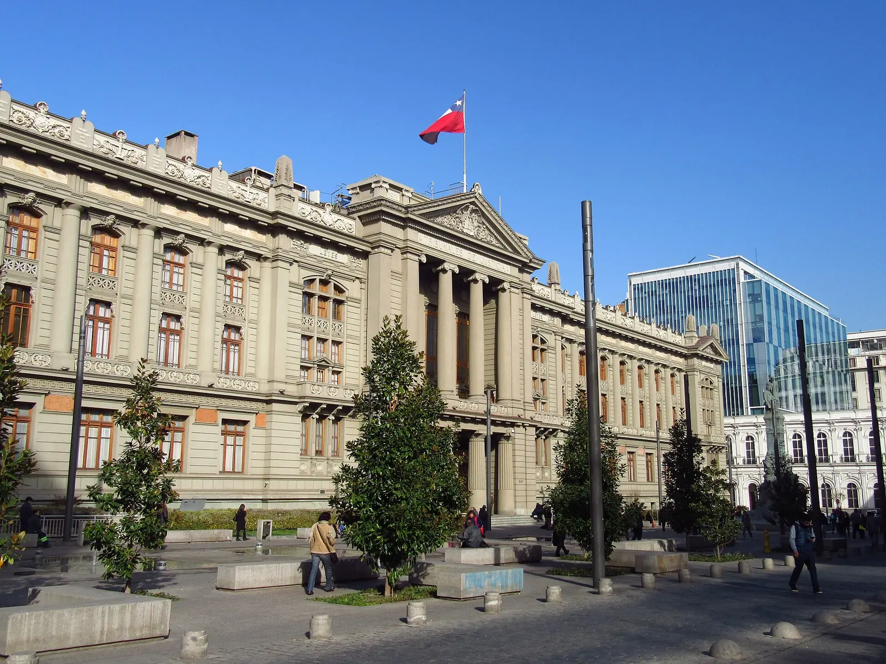
Pałac Sprawiedliwości w Santiago · fot. Felipe Restrepo Acosta, CC BY-SA 4.0, Wikimedia Commons - Zakresnaruszenie art. 19 nr 1 i 4; urzędy oceniają urządzenie; firma usuwa dane skarżącego
Chile zmieniło konstytucję ustawą nr 21.383: promulgacja 14.10.2021, publikacja w Diario Oficial 25.10.2021. Dopisany akapit art. 19 nr 1 każe ustawie chronić „la actividad cerebral, así como la información proveniente de ella”. Potem sprawa senatora Girardiego przeciwko Emotiv przed Sądem Najwyższym (Tercera Sala, 9.08.2023).
Sentencja: skargę uwzględniono w tym zakresie, że Instytut Zdrowia Publicznego i urząd celny mają ocenić urządzenie Insight i obrót danymi z niego; firma ma bez dalszych formalności usunąć informacje zapisane w chmurze lub portalach w związku z używaniem urządzenia przez skarżącego. Podstawa (motyw 9): naruszenie art. 19 nr 1 i 4 (integralność fizyczna i psychiczna, prywatność), bo produkt sprzedawano bez wszystkich zezwoleń i bez oceny władz sanitarnych.
Częste nieścisłości: że sąd zakazał sprzedaży (w sentencji tego nie ma, choć część prasy tak pisała); że nakazał usunąć wszystkie dane (tylko dane skarżącego); że to „pierwszy taki wyrok na świecie” (sąd tego nie twierdzi, to ocena komentatorów); że wyrok był jednomyślny (podpisało czworo z pięciorga sędziów). Słowo „neuroderechos” w wyroku nie pada.
Mapa: Chile pełnym znacznikiem (ustawa i wyrok odczytane). Puste znaczniki tylko według artykułu Szoszkiewicza i Yustego (EMBO Reports 2025): Rio Grande do Sul zmienił konstytucję stanu w 2023 r.; Kalifornia, Kolorado i Montana wpisały dane neuronalne do ustaw o prywatności konsumentów. Ekwador, Kolumbia, Meksyk i Urugwaj mają tylko projekty, więc ich na mapie nie ma.
Przejście: drugi głos jest ostrożniejszy. Nita Farahany.
The Battle for Your Brain (2023)
Farahany, wywiad IEEE Spectrum, 28.03.2023. Brzmienie polskie: Walka o mózg. Wolność myślenia w erze neurotechnologii, Zysk i S-ka 2025.
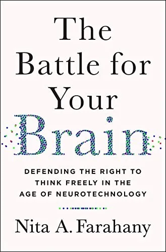
Definicja autorki (wywiad IEEE Spectrum, 28.03.2023): „The umbrella right, the right to cognitive liberty, is the right to self-determination over our brains and mental experiences.” Brzmienie polskie ze wstępu przekładu (Walka o mózg. Wolność myślenia w erze neurotechnologii, Zysk i S-ka, Poznań 2025, tłum. Bożena Jóźwiak): „prawo do samostanowienia o naszym mózgu i doświadczeniach umysłowych”.
Dawne hipotezy są potwierdzone, ale w wywiadzie, nie w książce. Po pierwsze, budowa z istniejących praw: składniki wolności poznawczej to prywatność umysłowa, wolność myśli i samostanowienie, a istniejące prawa (prywatność, wolność myśli, zbiorowe prawo do samostanowienia) „can be updated and expanded and interpreted”. Po drugie, prawo do korzystania: samostanowienie to „the right to access information about our own brains, the right to make changes”.
Uwaga: sama autorka nazywa wolność poznawczą także nowym prawem (wstęp przekładu: „nowe prawo do wolności poznawczej”). Powiedz obie rzeczy: nowa nazwa, zbudowana z istniejących praw.
Przejście: trzeci głos jest polski.
Polski badacz tego pytania
Kierownik projektu NCN:
Do we need the recognition of neurorights? (2024–2028)
Z R. Yuste (EMBO Reports 2025): wzmocnić istniejące przepisy o ochronie danych o szeroką ochronę danych neuronalnych.
Powiedz (30 s): Łukasz Szoszkiewicz z WPiA UAM bada dokładnie pytanie z głosowania 6a, w projekcie NCN do 2028 r. Z Rafaelem Yuste proponuje na razie wzmocnić istniejącą ochronę danych o szeroką ochronę danych neuronalnych. Odpowiedzi „nowe prawa czy nie” jeszcze nie daje.
Źródła: projekt NCN nr 2023/49/B/HS5/02139 (X 2024 – IX 2028); Ł. Szoszkiewicz, R. Yuste, „Mental privacy: navigating risks, rights and regulation”, EMBO Reports 26 (2025), s. 3469–3473: „We propose strengthening existing data protection regulations with a broad approach to safeguard neural data” (s. 3469); „If thought is inviolable, so too should be the data that can be used to infer it” (s. 3470). Jest dyrektorem ds. europejskich w NeuroRights Foundation; autorzy ujawniają ten związek. Pasek na slajdzie: czas trwania projektu, „dziś” to listopad 2026.
Przejście: zbierzmy argumenty przeciw nowym prawom.
Przeciw nowym prawom
Im więcej praw człowieka, tym słabsze każde z nich.
Art. 9 i art. 8 EKPC już obejmują ten obszar.
„Nowe” prawo może być ograniczalne tam, gdzie stare nie jest.
Spór nie dotyczy tego, czy chronić umysł, tylko jak: spisać prawa osobno, jak Chile, czy wyprowadzać je z istniejących.
Trzy argumenty przeciw. Nie przypisuję ich konkretnym autorom.
Wniosek z lektury: trzy głosy są bliżej siebie, niż zakładał plan. Fundacja Yustego pisze, że neuroprawa nie są nowymi prawami człowieka; Farahany buduje wolność poznawczą z istniejących praw (choć nazywa ją nowym prawem); Szoszkiewicz z Yuste proponuje wzmocnić istniejące przepisy o ochronie danych.
Ostatnie kliknięcie to wniosek wykładu, nie stan prawny: o co naprawdę jest spór. Chile nazwało i spisało ochronę aktywności mózgu w konstytucji; trzej autorzy wyprowadzają ochronę z praw, które już są. Z tym pytaniem idźcie do głosowania 6b.
Trzeci jest najciekawszy dla prawników: jeśli nowe „prawo do prywatności umysłowej” będzie miało klauzulę ograniczającą jak art. 8, to może osłabić ochronę, którą sfera wewnętrzna z art. 9 daje bez wyjątków.
Przejście: teraz drugi raz to samo pytanie. (Tło instytucjonalne: dodatek.)
Czy potrzebujemy nowych praw człowieka dla mózgu?
- ATak
- BNie, wystarczą obecne
- CNie wiem
Na wykładzie głosowali słuchacze; to samo pytanie padło też przed argumentami. Zastanów się, czy wybrał(a)byś inaczej.
30 sekund. Pokaż wynik obok wyniku 6a (cieńszy słupek „przed argumentami” pojawi się sam, jeśli wynik 6a jest wpisany). Nie zakładaj, że się przesunie; jeśli się nie przesunął, zapytaj na czacie, który argument był najsłabszy.
Przy wyjściu ze stoi w pasku na dole pojawi się kamyk: druga rzecz do zabrania, Wasz własny głos w tym sporze.
Przejście: a co mamy już spisane? Wchodzimy na Akropol.
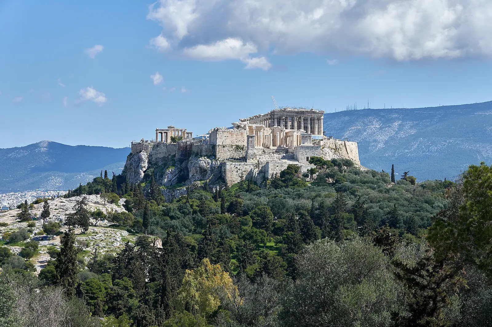
W drodze w pasku pojawia się kamyk.
Jedno zdanie historii: Akropol, wzgórze świątyń i skarbca. Ze źródła pewne tylko tyle: według Tukidydesa (2.13.3) na Akropolu przechowywano srebro miasta, sześć tysięcy talentów w monecie. Gdzie dokładnie stał skarbiec, nie mówię.
Przejście: zaglądamy do skarbca przepisów: AI Act, RODO, polska ustawa.
Zakaz manipulacji
„techniki podprogowe będące poza świadomością danej osoby lub celowe techniki manipulacyjne lub wprowadzające w błąd”
„Przyczyniać się do tego mogą na przykład interfejsy maszyna-mózg lub rzeczywistość wirtualna”
Art. 5 ust. 1 lit. a: zakaz technik podprogowych „będących poza świadomością danej osoby” i celowych technik manipulacyjnych, jeśli celem lub skutkiem jest znacząca zmiana zachowania przez ograniczenie zdolności do świadomych decyzji, z poważną szkodą. Lit. b: wykorzystywanie słabości ze względu na wiek, niepełnosprawność lub szczególną sytuację społeczną lub ekonomiczną.
Motyw 29 wprost wymienia interfejsy maszyna-mózg jako coś, co może się do takiej manipulacji przyczyniać. Prawodawca o tym pomyślał.
Brzmienie z wersji skonsolidowanej 02024R1689-20260727. Omnibus 2026/1744 dodał do art. 5 lit. ba i bb oraz ust. 1a i 1b, ale lit. a, b i f nie zmienił.
Przejście: najważniejszy dla nas jest lit. f.
Emocje w pracy i w szkole
„wprowadzania do obrotu, oddawania do użytku w tym konkretnym celu lub wykorzystywania systemów AI do wyciągania wniosków na temat emocji osoby fizycznej w miejscu pracy lub instytucjach edukacyjnych, z wyjątkiem przypadków, w których system AI ma zostać wdrożony lub wprowadzony do obrotu ze względów medycznych lub bezpieczeństwa”
Lit. f: zakaz wnioskowania o emocjach w miejscu pracy i w instytucjach edukacyjnych, z wyjątkiem względów medycznych lub bezpieczeństwa.
Pierwsza dziura: zakaz nie działa poza pracą i szkołą. Nie obejmuje konsumenta, wyborcy, pacjenta. Tam zostaje lit. a, z wysokim progiem (znacząca zmiana zachowania, poważna szkoda).
Przejście: AI Act to nie wszystko. RODO i polska ustawa. (Definicja „emocji lub zamiarów”: dodatek.)
Dane z mózgu i polska ustawa
Lista nie wymienia danych neuronalnych.
EDPS i AEPD: neurodane „często” są danymi szczególnej kategorii (TechDispatch „Neurodata”, czerwiec 2024).
o systemach sztucznej inteligencji (Dz.U. 2026 poz. 1003). Komisja Rozwoju i Bezpieczeństwa Sztucznej Inteligencji.
Skarga do Komisji: art. 59 ust. 1. Skarżący nie jest stroną: art. 60 ust. 1.
RODO, art. 9 ust. 1: lista kategorii szczególnych nie wymienia danych neuronalnych (słów „neuro” i „mózg” w RODO nie ma). Mogą jednak być danymi biometrycznymi (gdy służą jednoznacznej identyfikacji: art. 9 ust. 1, art. 4 pkt 14) lub danymi dotyczącymi zdrowia. TechDispatch „Neurodata” (EDPS i AEPD): „neurodata often constitute special categories of personal data”, np. jako dane biometryczne lub dane dotyczące zdrowia. TechDispatch nie mówi, że to „zależy od celu”; taki wniosek można wyprowadzić z art. 9 ust. 1 i art. 4 pkt 14 RODO, i tylko dla ścieżki biometrycznej.
Ustawa z 3.07.2026 o systemach sztucznej inteligencji (Dz.U. 2026 poz. 1003, ogłoszona 27.07.2026) tworzy Komisję Rozwoju i Bezpieczeństwa Sztucznej Inteligencji (art. 5 ust. 1: organ nadzoru rynku). Każda osoba fizyczna może złożyć do Komisji skargę na naruszenie AI Act (art. 59 ust. 1 ustawy, art. 85 AI Act), ale skarżący nie jest stroną postępowania: stroną jest ten, wobec kogo je wszczęto (art. 60 ust. 1), a Komisja wszczyna je z urzędu, także w toku rozpatrywania skargi (art. 58 pkt 1 lit. b). Ustawa nie daje skarżącemu wprost prawa do informacji o wyniku ani zażalenia; czy art. 28 Kpa (przez art. 64) dałby mu status strony, to kwestia wykładni.
Wejście w życie (art. 127): ustawa obowiązuje od 11.08.2026, a art. 8–18 oraz rozdziały 3–5, 8 i 9 od 28.10.2026. Na dzień wykładu obowiązują art. 5 i art. 58–64.
Przejście: sprawdźmy to na trzech sytuacjach.
Opaska EEG mierzy skupienie studentów na egzaminie.
- AZakazane
- BDozwolone
- CTo zależy
Na wykładzie głosowali słuchacze. Zastanów się, co byś wybrał(a).
Za zakazem: instytucja edukacyjna, lit. f.
Przeciw: czy skupienie to emocja? Motyw 18 wyłącza zmęczenie; o skupieniu milczy.
Klucz: A. Wytyczne Komisji, pkt 255: wnioskowanie o zainteresowaniu i uwadze uczniów jest zakazane (wytyczne niewiążące).
Głos, potem argumenty (kliknięcie). Dodatkowo: czy opaska jest systemem AI i czy działa na danych biometrycznych (art. 3 pkt 39).
Klucz: A (zakazane), jeśli system wnioskuje o stanie psychicznym z danych biometrycznych. Podstawy: instytucja edukacyjna (wytyczne Komisji z 29.07.2025, pkt 255), EEG jako biometria behawioralna (pkt 251), przykład Komisji o „interest and attention of students” (pkt 255). Zastrzeżenia: wytyczne są niewiążące; jeśli opaska zwraca tylko surowy parametr fizjologiczny (np. poziom fal) bez wnioskowania o stanie psychicznym, zostaje argument, że to nie „emocje”; wyjątek medyczny i bezpieczeństwa wąsko (pkt 256–259).
Przejście: złóżmy to w jedną mapę. (Sortowanie 7b i 7c: dodatek.)
Mapa praw
Jedno kliknięcie: wiersz „Dziura” wsuwa się i zapala na pomarańczowo, pięć aktów przygasa.
To trzecia rzecz do zabrania: mapa praw. Pięć aktów i zaznaczona dziura. Na mapie Aten pojawi się jako zwój w pasku na dole.
Dziura w jednym zdaniu: najmocniejsza ochrona (forum internum) nie ma orzecznictwa, a najkonkretniejsza (lit. f AI Act) kończy się na bramie zakładu pracy i szkoły.
Przejście: mamy definicję, mapę praw i kamyk. Mgła nad Areopagiem się rozchodzi.
Powiedz (30 s): Areopag był radą i sądem; po reformie Efialtesa (Ustrój polityczny Aten 25.2) stracił uprawnienia strażnika ustroju, ale dalej sądził m.in. zabójstwa (57.3). Licznik kamyków to teraz skład orzekający: odczytaj jego stan. Sala orzeka w jednej fikcyjnej sprawie (dwie kolejne są w dodatku).
W drodze w pasku pojawia się zwój: mapa praw. Opcja (nie na slajdach): Paweł z Tarsu na Areopagu (Dz 17,19.22; w. 34 Dionizy Areopagita).
Kierowca
Firma transportowa wymaga od kierowców czapki z EEG, która wykrywa zmęczenie. Odczyty trafiają do dyspozytora, a co tydzień także do działu kadr. Kadry biorą je pod uwagę przy ocenie pracownika.
Czy to dopuszczalne?
- ATak
- BTak, ale bez działu kadr
- CNie
Na wykładzie głosowali słuchacze. Zastanów się, co byś wybrał(a).
Kazus fikcyjny. 40 sekund na stan faktyczny, 40 sekund na głos.
Przejście: komentarz.
Bezpieczeństwo tak, kadry to inna sprawa
„systemów stosowanych do wykrywania poziomu zmęczenia zawodowych pilotów lub kierowców w celu zapobiegania wypadkom”
Zmęczenie kierowcy to według motywu 18 stan fizyczny, nie emocja, a lit. f wyłącza względy bezpieczeństwa. AI Act raczej nie zakazuje samego wykrywania zmęczenia.
Problem leży w przekazaniu danych do kadr: zmiana celu przetwarzania. Tu pytania zadaje RODO (cel, minimalizacja, ewentualnie art. 9) i prawo pracy. To stanowisko wykładu, nie rozstrzygnięcie: najbliżej przepisów jest odpowiedź B.
Przejście: schodzimy z Areopagu. (Kazusy 8b i 8c: dodatek.)
Ostatni krótki marsz, schodami w stronę Agory.
Przejście: zanim zejdziemy, wracamy do pytania z portu.
Czy Nepal to przykład nowych sposobów partycypacji, typowych dla „demokracji cyfrowej”?
- ATak
- BNie
- CTo była konsultacja, a nie wybór
Na wykładzie głosowali słuchacze; to samo pytanie padło też na początku wędrówki. Zastanów się, czy wybrał(a)byś inaczej.
30 sekund. Porównaj z wynikiem głosowania 1 (cieńszy słupek „na początku” na wykresie). Jeśli wynik się przesunął, zapytaj dlaczego. Jeśli nie, też dobrze: definicja nie musi zmieniać ocen, ma je uzasadniać.
Odczytaj końcowy stan licznika kamyków.
Przejście: tytuł ostatniego przystanku pożyczyłem od Miltona.
Wolność myśli u Sokratesa?
Sokrates nie bronił prawa do prywatnych myśli. Bronił prawa do badania na głos: nie przestanie filozofować, dopóki żyje.
Ateny sądziły to, co głosił, nie to, co myślał. Dziś technika obiecuje dostęp do myśli.
Do powiedzenia (1 min): wracamy do punktu zwrotnego z Więzienia. Pytanie w tytule jest uczciwe: w Atenach nie było pojęcia wolności myśli jako prawa. Sokrates w Obronie mówi, że dopóki oddycha i ma siły, nie przestanie filozofować (29d), i że życie bez badania nie jest warte życia (38a). Bronił więc mówienia i pytania, nie prywatnej sfery myśli. Miasto mogło go sądzić za słowa i postępowanie. Do myśli nie miało dostępu, więc nie musiało jej chronić. Neurotechnologia zmienia to założenie i dlatego forum internum, które było oczywiste, trzeba dziś bronić wprost.
Uwaga: zarzut dotyczył też przekonań i praktyk kultowych (νομίζειν, zob. notatki do slajdu 23), więc nie mów, że Ateny karały „tylko za słowa”; mów, że sądziły to, co głosił i jak postępował.
Milton (Areopagitica, 1644) jest w dodatku, gdyby padło pytanie o wolność druku.
Przejście: zdanie na koniec.
Demokracja cyfrowa jest tyle warta, ile wolny jest umysł tego, kto decyduje.
- Definicja: trzy warstwy, narzędzia, areny, warunki.
- Mapa praw: sfera wewnętrzna chroniona bez wyjątków, ale z dziurą poza pracą i szkołą.
- Własny głos: nowe neuroprawa czy nowa wykładnia starych.
Akropol widziany z Areopagu · fot. Ggia, CC BY-SA 3.0, Wikimedia Commons
Zdanie końcowe, powoli. Potem trzy rzeczy, każda jednym zdaniem: tabliczka z Agory, mapa praw z Akropolu, kamyk ze stoi.
Przejście: ostatni ekran i pytania.
Dziękuję. Pytania?
dr Karol Kasprowicz, WPiA UMCS
Silnik i pomysł formy: Łukasz Szoszkiewicz, »Nowy Świat« (2026) ↗
Pytania z czatu. Źródła: klawisz S. Slajdy z dodatku: G (numery R1, R2, …).
Czego w tej historii nie było
- Ankieta była nieformalna.
- Nikt nie sprawdzał, kto głosuje.
- Premier formalnie powołał prezydent.
„1. Władza zwierzchnia w Rzeczypospolitej Polskiej należy do Narodu. 2. Naród sprawuje władzę przez swoich przedstawicieli lub bezpośrednio.”
Trzy zastrzeżenia, bez których ta historia byłaby anegdotą. To nie była procedura wyborcza, tylko nieformalna ankieta w narzędziu dla graczy.
Polski punkt odniesienia, nie ocena Nepalu: art. 4 Konstytucji mówi, że Naród sprawuje władzę przez przedstawicieli lub bezpośrednio. Pytanie na później: czy „bezpośrednio” może kiedyś znaczyć „na czacie”? Brzmienie art. 4 sprawdzone w Dz.U. 1997 nr 78 poz. 483.
Przejście: teraz Wasz pierwszy kamyk.
Co mówią instytucje
Rekomendacja Komitetu Ministrów CM/Rec(2009)1, 18.02.2009
Rezolucja z 16.03.2017 o e-demokracji, 2016/2008(INI)
Pytanie przy lekturze: czy opisują trzecią warstwę, warunki?
Dwa dokumenty, które definiują e-demokrację urzędowo. Rezolucja PE, pkt 1 (polska wersja językowa z EUR-Lex, nie przekład roboczy): e-demokracja to „wsparcie i wzmocnienie demokracji tradycyjnej za pomocą ICT”, które może uzupełniać procesy demokratyczne m.in. przez administrację elektroniczną, e-rządzenie, e-debaty, e-uczestnictwo i e-głosowanie.
Wynik lektury rezolucji PE: opisuje warunki dostępu i kompetencji (dostęp do informacji, pkt 15; edukacja i kompetencje cyfrowe, pkt 17; ryzyko manipulacji w narzędziach deliberacji online, pkt 11; bezpieczne środowisko, pkt 36), ale nie warunki formowania opinii. Słów dezinformacja, algorytm, pluralizm mediów w niej nie ma.
Przejście: dlatego proponuję definicję roboczą.
Która warstwa jest dziś najsłabiej chroniona prawem?
- ANarzędzia
- BAreny
- CWarunki
Na wykładzie głosowali słuchacze. Zastanów się, co byś wybrał(a).
30 sekund. Odczytaj wynik.
Jeśli wygrywa C, powiedz: zgadzam się, i reszta wykładu jest o tym, dlaczego. Jeśli wygrywa A albo B, zapytaj jedną osobę na czacie o powód; nie przekonuj na siłę.
Przy wyjściu z Agory na mapie pojawi się w pasku na dole tabliczka z definicją: pierwsza z trzech rzeczy, z którymi wychodzicie.
Przejście: idziemy na wzgórze, gdzie Ateńczycy głosowali.
Miliony kliknięć
- Agregacja preferencji to nie deliberacja: nikt z nikim nie rozmawiał.
- Wynik zależy też od tego, kto ułożył pytanie.
Eksperyment Moral Machine: około 40 milionów decyzji z 233 państw i terytoriów (Awad i in., Nature 2018).
Liczby potwierdzone w streszczeniu artykułu (Nature, 24.10.2018): „40 million decisions in ten languages from millions of people in 233 countries and territories”. Strona moralmachine.net odpowiada (17.11.2026; działania ankiety nie sprawdzano).
Dwa wnioski. Pierwszy: miliony kliknięć to zliczanie, nie rozmowa. Wróćcie do definicji: zliczanie to tylko jedna z trzech czynności. Drugi: to, co przed chwilą zrobiliśmy, pokazuje, że autor pytania współdecyduje o wyniku.
Przejście: Ateńczycy znali ten problem. Dowód leżał w studni.
Skorupka wypisana z góry?
Według Broneera w studni na stoku Akropolu leżało 190 skorupek z imieniem Temistoklesa, wypisanych przez czternaście rąk.
Część badaczy (od Broneera) uważa je za karty do ostracyzmu przygotowane zawczasu: gotową odpowiedź wręczaną głosującemu.
Ta interpretacja jest dyskutowana. Ostracyzm odbywał się na Agorze, nie na Pnyksie.
Pierwsze kliknięcie: 190 skorupek zbiera się w 14 skupisk (ilustracja czternastu rąk, nie ich liczebność), jedna z innym imieniem zostaje z boku. Potem dwa zdania o interpretacji.
Podaj to jako znalezisko, nie jako scenę z Pnyksu: ostracyzm odbywał się na Agorze (Plutarch, Arystydes 7.4; tak też Broneer, s. 243).
Według Broneera (Hesperia 1938, s. 228) w studni M znaleziono 191 ostraków, z których 190 nosi imię Temistoklesa. Wyróżnił czternaście rąk (s. 231–232) i uznał, że skorupek nie wypisali sami głosujący. Wniosek, że przygotowano je z góry dla głosujących, jest jego interpretacją; późniejszej literatury nie czytałem. Mów: „według Broneera”.
Ciekawostka na pytania: według Plutarcha (Arystydes 7) ostracyzm był nieważny, jeśli głosowało mniej niż 6000 osób.
Przejście (dodatek, od 25.11.2026): wróć do głównego toku klawiszem G. W głównym toku ta myśl jest w przejściu slajdu 13.
Art. 171 § 5 pkt 2 KPK
„2) stosowanie hipnozy albo środków chemicznych lub technicznych wpływających na procesy psychiczne osoby przesłuchiwanej albo mających na celu kontrolę nieświadomych reakcji jej organizmu w związku z przesłuchaniem.”
§ 7: tak uzyskane wyjaśnienia i zeznania nie mogą stanowić dowodu.
Dwa zakazy w jednym punkcie: wpływanie na procesy psychiczne i kontrola nieświadomych reakcji organizmu. To jest polski zalążek ochrony forum internum, choć tylko w przesłuchaniu.
Brzmienie z tekstu jednolitego Dz.U. 2026 poz. 490 (stan prawny 16.03.2026), odczytane z api.sejm.gov.pl.
Zmian art. 171 i 199a po tekście jednolitym nie było: sprawdzono pięć nowelizacji z listy API Sejmu (stan na 26.10.2026).
Przejście: a co orzekł Strasburg?
Kto jeszcze się tym zajął
Jeden slajd, bez wchodzenia w treść. Pokazuje, że pytanie jest na stole w wielu instytucjach naraz.
Potwierdzone w tekstach: OECD, Recommendation of the Council on Responsible Innovation in Neurotechnology (OECD/LEGAL/0457), przyjęta 11.12.2019; A/HRC/57/61 z 8.08.2024, raport Komitetu Doradczego Rady Praw Człowieka o wpływie neurotechnologii na prawa człowieka.
Przejście: teraz drugi raz to samo pytanie.
„Emocje lub zamiary”
„system rozpoznawania emocji” oznacza system AI służący do identyfikacji lub wywnioskowania emocji lub zamiarów osób fizycznych na podstawie danych biometrycznych tych osób
„Nie obejmuje ono stanów fizycznych, takich jak ból lub zmęczenie”
Pytanie: czy skupienie to emocja?
Słowo „zamiarów” łatwo przeoczyć. System, który wnioskuje o zamiarach, jest systemem rozpoznawania emocji w rozumieniu AI Act.
Druga dziura: motyw 18 wyłącza stany fizyczne, takie jak ból lub zmęczenie. Tekst wymienia zmęczenie. O skupieniu tekst milczy: to nasze pytanie, nie odpowiedź z przepisu.
Na pytania: definicja „danych biometrycznych” w art. 3 pkt 34 obejmuje dane osobowe będące wynikiem specjalnego przetwarzania technicznego, które dotyczą „cech fizycznych, fizjologicznych lub behawioralnych osoby fizycznej”. Warunek specjalnego przetwarzania technicznego trzeba spełnić. Wytyczne Komisji (pkt 251) wprost zaliczają EEG do biometrii behawioralnej: „eye tracking and heartbeats, electroencephalography (EEG), or electrocardiograms (ECG)”. To argument, że sygnał EEG może być daną biometryczną w rozumieniu AI Act.
Czy skupienie to emocja? Wytyczne Komisji do art. 5 (C(2025) 5052 z 29.07.2025; niewiążące, pkt 5) każą rozumieć emocje szeroko (pkt 247), a w pkt 255 piszą: „Using an emotion recognition AI system by an education institution to infer the interest and attention of students is prohibited.” Komisja traktuje więc uwagę uczniów jak emocję, ale w przykładzie, nie w definicji; wyroku TSUE nie ma. Miejsce pracy i instytucje edukacyjne rozumie szeroko (pkt 254, 255), stany fizyczne, jak zmęczenie, wyłącza (pkt 249).
Przejście: AI Act to nie wszystko. RODO i polska ustawa.
Reklama wyborcza dobierana do nastroju odczytanego z zegarka.
- AZakazane
- BDozwolone
- CTo zależy
Na wykładzie głosowali słuchacze. Zastanów się, co byś wybrał(a).
Przeciw lit. f: to nie praca ani szkoła.
Za zakazem: lit. a, jeśli to technika manipulacyjna ze znaczącą zmianą zachowania i poważną szkodą; do tego rozporządzenie 2024/900 (art. 18 ust. 1 lit. b i c) i RODO.
Klucz: C, i na pewno nie z lit. f.
Nastrój jest bliżej emocji niż skupienie, ale lit. f nie działa poza pracą i szkołą. Zostaje lit. a z wysokim progiem oraz przepisy o reklamie politycznej i ochronie danych. To ta sama sytuacja co w kazusie 8b, w mniejszej skali.
Klucz: C (to zależy), nie z lit. f. Wytyczne Komisji, pkt 266: poza pracą i szkołą zakaz lit. f nie działa; taki system jest systemem wysokiego ryzyka, a w niektórych przypadkach może go zakazać lit. a lub b. Wytyczne nie rozstrzygają, czy ten przypadek spełnia próg lit. a.
Rozp. 2024/900, art. 18 ust. 1: targetowanie reklamy politycznej online z użyciem danych osobowych wymaga wyraźnej zgody (lit. b) i nie może obejmować profilowania z wykorzystaniem szczególnych kategorii danych z art. 9 ust. 1 RODO (lit. c). Czy „nastrój z zegarka” to dane dotyczące zdrowia, to osobne pytanie.
Aplikacja medytacyjna z opaską EEG.
- AZakazane
- BDozwolone
- CTo zależy
Na wykładzie głosowali słuchacze. Zastanów się, co byś wybrał(a).
Za dozwolonym: konsument, poza pracą i szkołą; użytkownik sam wybiera.
To zależy: wysokie ryzyko, jeśli aplikacja wnioskuje o emocjach; RODO (dane o zdrowiu); od tego, co robi z odczytem.
Klucz: C (albo B): dozwolone nie znaczy nieregulowane.
Klucz: C, z objaśnieniem „poza zakazem, ale nie poza prawem” (B też do obrony, jeśli ktoś doda, że dozwolone nie znaczy nieregulowane). Konsument jest poza zakazem lit. f (wytyczne Komisji, pkt 266). Jeśli aplikacja wnioskuje o emocjach, to system wysokiego ryzyka (załącznik III pkt 1 lit. c AI Act) z obowiązkiem przejrzystości (art. 50 ust. 3); do tego RODO (dane dotyczące zdrowia) i ewentualnie lit. a lub b. O aplikacjach medytacyjnych wytyczne nic nie mówią. Jeśli aplikacja sprzedaje odczyty reklamodawcom, wracamy do sytuacji 7b.
Przejście: złóżmy to w jedną mapę.
Kampania
Komitet wyborczy kupuje od producenta słuchawek z czujnikami dane o tym, kiedy użytkownicy tracą koncentrację. W tych właśnie chwilach wyświetla im spoty wyborcze. Nikt nie odczytuje treści ich myśli.
Co zostało naruszone?
- APrywatność: wolno ważyć
- BWolność myśli: nie wolno ważyć
Na wykładzie głosowali słuchacze. Zastanów się, co byś wybrał(a).
Kazus fikcyjny. 40 sekund na stan faktyczny, 40 sekund na głos. To kazus o tezie z Laurionu: perswazja bez czytania myśli.
Przejście: komentarz.
Prywatność czy myśl?
Art. 8 EKPC, art. 47 Konstytucji, RODO. Dane o stanie użytkownika użyte do celu politycznego. Test proporcjonalności.
Czy wybór chwili podatności to wpływ na myślenie? Możliwy atrybut 3 z A/76/380: brak niedopuszczalnej zmiany myśli.
Raport (pkt 28): zwykła perswazja i reklama rzadko budzą zastrzeżenia. Manipulację odróżnia czterema kryteriami (pkt 36): zgoda, ukrycie, asymetria władzy, szkoda.
AI Act: lit. f nie, lit. a tylko przy poważnej szkodzie. Rozp. 2024/900, art. 18 ust. 1 lit. b i c: wyraźna zgoda, bez profilowania na danych szczególnych kategorii.
Ta sama waga co na slajdzie 28: wariant A leży na szalce (ważenie). Pierwsze kliknięcie: karta B i odważnik „B” z kłódką obok wagi (jeśli to wolność myśli, ważyć nie wolno). Potem raport i AI Act.
Wariant A to bezpieczna odpowiedź prawnika: dane osobowe, cel polityczny, ważenie. Wariant B to stanowisko wykładu (teza z Laurionu), nie stan prawny: jeśli moment podatności to brama do myślenia, to ingerencja dotyka sfery wewnętrznej, której ważyć nie wolno.
Zastrzeżenie z A/76/380, pkt 28 (o reklamie i „nudges”): „These specific examples may not often evoke human rights concerns”. Pkt 36 podaje kryteria odróżniające manipulację od perswazji: „(a) Consent”, „(b) Concealment or obfuscation”, „(c) Asymmetrical power”, „(d) Harm”. Wariant B trzeba oprzeć na tych kryteriach.
Rozp. 2024/900, art. 18 ust. 1: targetowanie reklamy politycznej online z użyciem danych osobowych wymaga wyraźnej zgody (lit. b) i nie może obejmować profilowania z wykorzystaniem szczególnych kategorii danych z art. 9 ust. 1 RODO (lit. c). Lit. f AI Act nie działa (to nie praca ani szkoła); lit. a wymaga znaczącej zmiany zachowania i poważnej szkody.
Przejście: trzecia sprawa odwraca perspektywę.
Badanie na własną prośbę
Oskarżony sam prosi o badanie mózgu. Badanie ma pokazać, że nie rozpoznaje miejsca zbrodni. Prokurator się sprzeciwia i powołuje się na art. 171 § 5 KPK.
Czy zgoda oskarżonego uchyla zakaz?
- ATak
- BNie
- CTo zależy od formy badania
Na wykładzie głosowali słuchacze. Zastanów się, co byś wybrał(a).
Kazus fikcyjny. 40 sekund na stan faktyczny, 40 sekund na głos. Ten kazus pokazuje dwie strony wolności poznawczej: tarczę i prawo do użycia.
Przejście: komentarz.
Tarcza i prawo do użycia
- Art. 171 § 5 dotyczy przesłuchania. Zgody w nim nie ma; § 7 wyklucza dowód.
„Stosowanie w czasie badania przez biegłego środków technicznych mających na celu kontrolę nieświadomych reakcji organizmu badanej osoby możliwe jest wyłącznie za jej zgodą.”
Hamulec z Laurionu: czy takie badanie w ogóle coś pewnego pokazuje?
W przesłuchaniu zgoda nie uchyla zakazu: art. 171 § 5 nie przewiduje wyjątku, a § 7 wyklucza wykorzystanie dowodu. Poza przesłuchaniem KPK zna drogę za zgodą: art. 199a, badanie przez biegłego. Dlatego najbliżej przepisów jest odpowiedź C.
Dwie strony wolności poznawczej: zakaz chroni przed państwem, ale oskarżony chce użyć technologii w swojej obronie. Farahany (wywiad IEEE Spectrum, 2023) rozumie samostanowienie, składnik wolności poznawczej, także jako prawo do informacji o własnym mózgu i do zmian w nim.
Na koniec hamulec: nawet dopuszczalne badanie nie musi być wiarygodne (martwy łosoś, wnioskowanie odwrotne). Brzmienie art. 171 § 5 i 7 oraz art. 199a sprawdzone w Dz.U. 2026 poz. 490.
Przejście: schodzimy z Areopagu.
Areopagitica
Pisemna mowa do Parlamentu przeciw licencjonowaniu druku. Bronił prawa do druku.
Dziś trzeba bronić kroku wcześniejszego: prawa do myśli, zanim stanie się słowem.
Tytuł według strony tytułowej (Londyn 1644): „Areopagitica; A Speech of Mr. John Milton for the Liberty of Unlicenc'd Printing, to the Parlament of England”. Mowa była pisemna; według komentarza wydania Dartmouth nigdy jej nie wygłoszono. Bronił prawa do druku. Dziś broni się kroku wcześniejszego.
Kontekst: zarządzenie Parlamentu o regulacji druku z 14.06.1643 (Licensing Order; Firth i Rait, Acts and Ordinances of the Interregnum, t. 1, s. 184–186). Milton pisze o „an order of licencing”; że chodzi o ten akt, wynika ze zbieżności treści i czasu, a opracowanie Dartmouth nazywa go wprost „the Licensing Order of 1643”.
Związek tytułu z mową Izokratesa (Areopagitikos, o Areopagu jako strażniku ustroju) to tylko informacja z komentarza redaktora wydania Dartmouth; w tekście Miltona nazwisko Izokratesa nie pada.
Slajd w dodatku: na pytanie o wolność druku.
Bibliografia i credits
Przygotowane z AI · treść, kierunek i decyzje: dr Karol Kasprowicz, WPiA UMCS · silnik prezentacji i pomysł formy wędrówki po mapie: dr Łukasz Szoszkiewicz, WPiA UAM, „Nowy Świat. Jak AI zmienia naszą pracę?” (2.10.2026)
Mapa Aten i postać wędrowca: obrazy wygenerowane w Gemini według opisu autora; grafik z „Nowego Świata” nie użyto. AI (Claude Code) pisała kod, sprawdzała fakty i cytaty w źródłach pierwotnych, robiła wizualizacje i kontrolę w przeglądarce.
Tylko w Claude Code: 15 dni (11–25.11.2026), ok. 35 poleceń, ok. 2 700 wywołań narzędzi.
Silnik i forma wykorzystane za zgodą autora, dr. Łukasza Szoszkiewicza.
Ostatni slajd, poza czasem wykładu (dodatek, 0 min). Przewijanie: kółko myszy albo strzałki w górę i w dół; strzałki w lewo i w prawo dalej zmieniają slajd. W oknie prowadzącego strzałki przewijają tylko jego kopię: na udostępnionym ekranie przewijaj kółkiem myszy w oknie głównym.
Lista buduje się przy starcie z panelu źródeł (klawisz S), w tych samych grupach; numery w nawiasach to numery slajdów.
Jak powstał ten wykład
- Koncepcja, tezy, dobór źródeł i decyzje: dr Karol Kasprowicz, WPiA UMCS.
- Forma wędrówki po mapie, silnik prezentacji (ruch bohatera, mgła, nawigacja, okno prowadzącego) i pomysł: dr Łukasz Szoszkiewicz, WPiA UAM, „Nowy Świat. Jak AI zmienia naszą pracę?” (2.10.2026) ↗
- Mapa Aten i postać wędrowca: obrazy wygenerowane w Gemini (Google) według promptów autora, dopasowane skryptami; ikony narysowane w kodzie. Grafik z »Nowego Świata« nie użyto.
- AI (Claude Code, modele Claude) pisała kod, sprawdzała fakty i cytaty w źródłach pierwotnych, robiła wizualizacje i kontrolę w przeglądarce.
- Każdy fakt sprawdzony w źródłach pierwotnych i oceniony pod względem pewności. Zdjęcia z autorami i licencjami: panel źródeł (klawisz S) i ostatni slajd.
Tylko w Claude Code: 15 dni (11–25.11.2026), ok. 35 poleceń, ok. 2 700 wywołań narzędzi.
Silnik i forma wykorzystane za zgodą autora, dr. Łukasza Szoszkiewicza.
Slajd tylko w wersji publicznej, na samym końcu: kto, co i jak zrobił. Pełna bibliografia na poprzednim slajdzie.
← → zmienia · Shift: większy krok · 0: bez korekty · K lub Esc: zamknij
Koło na ścianie ma być okrągłe.